Đồ án cuối kỳ — Trực quan hóa dữ liệu
Lát cắt Việt Nam – ASEAN · dữ liệu Atlas of Economic Complexity (Harvard Growth Lab), 1995–2023 · năm tham chiếu 2023
Nhóm 8 · github.com/Dr-Vphuc/global-ecom
Việc T27. Mục này là bản một trang cho người chỉ đọc một trang. Mọi con số dưới đây đều lặp lại ở phần thân kèm lệnh đo lại; không có con số nào chỉ xuất hiện ở đây.
Quyết định mà báo cáo này muốn thuyết phục: phần ưu tiên tăng thêm cho xuất khẩu giai đoạn tới nên dồn vào đâu — và câu trả lời là thiết bị quang học – đo lường – y tế (HS90) cùng máy móc công nghiệp (HS84), chứ không phải đào sâu thêm vào lắp ráp điện tử hay nhóm nông – thủy sản đang bán rất đậm.
Bốn con số dựng nên lập luận đó:
| Đo được gì | 1995 | 2023 | |
|---|---|---|---|
| ① | Khối lượng nhảy rất xa — nhanh hơn thế giới 16,7 lần | 5,12 tỷ USD · hạng 61/211 | 385,54 tỷ USD · hạng 16/230 |
| ② | Năng lực đi lên thật, nhưng chậm hơn khối lượng | ECI −1,00 (#181/211) | +0,58 (#78/230) — hạng 5 ASEAN |
| ③ | Và tiền dồn lại: ba thị trường đầu nhận quá nửa hàng xuất | HHI 0,1209 · top-3 47,21% | HHI 0,1226 · top-3 52,41% |
| ④ | Chỗ bán đậm nhất đúng là chỗ hàng dễ nhất | — | giày dép RCA 7,52 / PCI −0,49 · máy móc RCA 0,95 / PCI +0,78 |
Con số ③ là chỗ phải đọc kỹ, vì nó không phải một đường đi xuống: Việt Nam đa dạng hoá thị trường suốt 18 năm (HHI xuống đáy 0,0662 năm 2013) rồi dồn lại suốt 10 năm liền, và năm 2023 đã vượt cả mức tập trung của năm 1995. Phía mua vào còn hẹp hơn: HHI 0,1979, ba nhà cung cấp đầu chiếm 61,3%.
Và cả bốn con số là kim ngạch gộp, chưa phải phần ở lại. Theo số của OECD TiVA, phần giá trị làm ra trong nước của toàn nền kinh tế đã tụt từ 79,8% (1995) xuống 51,5% (2022), điện tử từ 64,1% xuống 44,2%. Nghĩa là con số ① tăng nhanh hơn phần tiền ở lại Việt Nam (§6.2).
Vì sao tin được đề xuất. Nó không được chọn bằng tay mà là đầu ra của một quy tắc viết trong src/make_decision_plane.py, và quy tắc ấy đã được chạy lại trên quá khứ ba lần:
| Chạy quy tắc ở năm | Nó chọn gì | Tám năm sau |
|---|---|---|
| 2007 | máy điện – điện tử (RCA 0,573) | RCA 1,996 (2015) → 2,230; xuất 3,4 → 115,4 tỷ USD |
| 2015 | thiết bị quang học (0,751) · sắt thép (0,604) | 0,905 · 1,003 — vượt ngưỡng lợi thế |
| 2023 | thiết bị quang học (0,905) · máy móc công nghiệp (0,954) | đề xuất của báo cáo này |
Nền so sánh cho ba lần ấy: trong 97 nhóm hàng cấp 2, chỉ 45,4% có RCA tăng giữa 2015 và 2023, trung vị −0,0178. Nhóm đã có RCA ≥ 1,5 thì chỉ 25% tăng. Nói cách khác, RCA không tự đi lên — nên việc cả ba lần chọn đều đi đúng hướng không phải chuyện cả rổ hàng cùng lên.
Điều gì sẽ làm nhóm đổi ý: nếu RCA của HS90 và HS84 chững lại dưới 1,00 trong vài năm tới, nếu HHI đầu ra tự đi xuống từ 0,1226 mà không cần can thiệp, hoặc nếu phần giữ lại trong nước của khối điện tử – máy móc tụt dưới 44,2% khi RCA đã vượt 1,00, thì luận cứ yếu đi và phải chọn lại. Mốc kiểm và lệnh kiểm ghi ở §7.4, điều kiện bác bỏ ở §7.5.
Và phải nói thật ngay ở trang đầu: dữ liệu Atlas là xuất khẩu gộp, không có giá trị gia tăng. Báo cáo đo được cái gì đi qua Việt Nam, chưa hẳn cái gì ở lại. Ở mức ngành thì có số TiVA (§6.2): điện tử giữ 44,2%, máy móc 47,5%; riêng HS84 và HS90 thì chưa đo được. Năm hạn chế ở §8.1.
Câu hỏi nghiên cứu đã chốt ở docs/cau-hoi-nghien-cuu.md:
Việt Nam đang đứng ở đâu trong mạng lưới thương mại toàn cầu năm 2023, và vị trí đó được tạo nên bởi cái gì?
Ba câu hỏi con, và mỗi câu có một họ kỹ thuật trả lời:
| Câu hỏi con | Trả lời bằng | Nằm ở | |
|---|---|---|---|
| a | Mạng lưới thương mại thế giới có hình dạng thế nào? | mật độ, phân bố bậc, Gini trọng số, node-link, ma trận kề | §4.1 |
| b | Việt Nam nối với ai, và nối chặt đến đâu? | bậc, độ mạnh, betweenness, cụm Louvain, chord | §4.2, §5.2, §5.3 |
| c | Việt Nam bán cái gì, và cái đó đáng giá đến đâu? | treemap, sunburst, RCA × PCI, ECI theo thời gian | §3.2, §5.1, §6.1 |
Lát cắt bắt buộc của đề tài là Việt Nam trong ASEAN, và báo cáo xử lý nó như một câu hỏi, không phải một tiền đề — §4.2 cho thấy ba phép đo độc lập đều không tìm thấy ASEAN như một cộng đồng thương mại.
Người đọc chính là giảng viên và bạn cùng lớp môn Trực quan hóa dữ liệu, đọc kỹ cách làm và không mặc định biết kinh tế học. Hệ quả ràng buộc lên cả báo cáo: mỗi thuật ngữ (RCA, PCI, ECI, Gini, betweenness, Louvain, HHI) được giải thích bằng một câu đời thường ngay chỗ dùng lần đầu, và mọi con số lần ngược được về một script trong src/ — không có số nào chép tay từ một trang web.
Và báo cáo không dừng ở mô tả. Vai diễn là nhà tư vấn: bốn phần đầu dựng bằng chứng, phần 7 nói ra việc nên làm, phần 8 nói thẳng chỗ nào lập luận còn yếu. Đó là quyết định B18 trong sổ phát hiện, và nó là lý do báo cáo có một quy tắc chọn viết trong code (§7.1) thay vì một đoạn khuyến nghị viết bằng cảm tính.
Một câu mà toàn bộ báo cáo hướng tới:
Từ 1995 đến 2023 Việt Nam đã đi từ rìa vào giữa mạng lưới thương mại thế giới, nhưng bước nhảy về khối lượng lớn hơn hẳn bước nhảy về vị thế: xuất khẩu nhiều nhất ASEAN mà độ phức tạp chỉ đứng thứ năm, và quá nửa hàng hoá đi về đúng ba thị trường.
Ba thứ hạng lệch nhau chính là câu chuyện, và phải ghi kèm mẫu số vì mẫu số đổi theo năm:
| Việt Nam 2023 xếp hạng theo… | Hạng | Trên |
|---|---|---|
| Giá trị xuất khẩu | 16 | 230 nước có xuất khẩu trong mạng 2023 |
| Độ phức tạp kinh tế (ECI) | 78 | 230 nước Atlas chấm được ECI |
| Mức tập trung giá trị xuất khẩu (HHI) | 30 | 97 nước xuất trên 10 tỷ USD |
Tiền thì hạng 16, chất lượng hàng thì hạng 78, và mức dồn vào ít thị trường thì nằm ở nhóm một phần ba tập trung nhất thế giới.
⚠️ Bản nháp thông điệp ở docs/cau-hoi-nghien-cuu.md từng viết "nhiều tiền chảy qua ít kênh" và trích hạng số bạn hàng (66/231) làm bằng chứng. Phát hiện A16 (§5.3) đã bác phép đo đó: đếm bạn hàng là đếm cả những luồng cỡ một triệu USD, và ở bất kỳ mức sàn giá trị nào thì số kênh của Việt Nam lại tăng. Câu dùng trong báo cáo này là "dồn tiền vào ít cửa hơn", đo bằng HHI và tỷ trọng ba bạn hàng đầu — xem §5.3.
| Nhịp | Phát hiện | Con số đỡ cho nó | Hình |
|---|---|---|---|
| 1 | Rổ hàng đã được xây lại gần như từ đầu | điện tử 0,60% → 29,94%; tổng xuất khẩu gấp 75,3 lần | T21 |
| 2 | Và năng lực đi lên thật, đo được | ECI #181/211 → #78/230; COI 0,225 → 1,197 | A1 |
| 3 | Nhưng tiền dồn lại vào ít cửa | HHI 0,0662 (2013) → 0,1226 (2023); top-3 nhận 52,41% | T19, T20 |
| 4 | Và chỗ bán đậm nhất là chỗ hàng dễ nhất | giày dép RCA 7,52 / PCI −0,49; máy móc RCA 0,95 / PCI +0,78 | T31 |
| 5 | → Đề xuất (mục riêng) | — | T31 |
Bốn nhịp đầu là phần 3 đến phần 6 của báo cáo; nhịp 5 là phần 7 — Đề xuất, dựng trên §6.1 đến §6.3.
Trước bốn nhịp đó, §4.1–§4.2 trả lời câu hỏi nghiên cứu ở tầng mạng lưới: cấu trúc thương mại toàn cầu trông như thế nào, và Việt Nam nằm ở đâu trong đó. Ba kết quả đầu tiên đều đi ngược trực giác thông thường, nên phải nói trước — nếu không, người đọc sẽ tưởng các hình bị vẽ sai.
Báo cáo đi theo bốn hồi mà file phân công đã chốt — Quy mô → Cấu trúc → Vị trí Việt Nam → Ý nghĩa — rồi thêm hai mục mà vai nhà tư vấn đòi phải có:
| Phần | Nội dung | Hồi |
|---|---|---|
| 2 | Phương pháp luận: số ở đâu ra, vì sao tin được | — |
| 3 | Quy mô: thế giới gấp 4,51 lần, Việt Nam gấp 75,3 lần | ① |
| 4 | Cấu trúc: mạng này không có hub, và ASEAN không phải một cộng đồng | ② |
| 5 | Vị trí Việt Nam: trèo lên thật, nhưng qua một hành lang đang hẹp lại | ③ |
| 6 | Ý nghĩa: trèo bằng gì, và điều đó ràng buộc đề xuất thế nào | ④ |
| 7 | Đề xuất — quy tắc, phép thử lại ba lần, mục tiêu đo được | ⑤ |
| 8 | Hạn chế và kết luận | — |
| Phụ lục | Mười bảng sạch · sáu cửa kiểm · cây HS92 · quy ước thị giác · lệnh tái lập | — |
Mười hai họ hình, cả hai họ kỹ thuật của môn học (cây và đồ thị), mỗi hình render ở hai năm để câu tiêu đề không bao giờ là một khẳng định viết sẵn:
| Hình | Việc | Script | Đứng ở |
|---|---|---|---|
| Treemap cơ cấu xuất khẩu | T12 | make_hierarchy_charts.py | §3.2 |
| Sunburst 4 tầng cây HS92 | T13 | make_hierarchy_charts.py | §3.2, §A.3 |
| Small multiples 4 nước ASEAN | T14 | make_small_multiples.py | §5.1 |
| Log-log phân bố bậc | T09 | make_degree_loglog.py | §4.1 |
| Node-link mạng đã lọc | T15 | make_node_link.py | §4.1, §4.2 |
| Hai ma trận kề (alphabet / cụm) | T16 | make_adjacency_matrix.py | §4.1, §4.2 |
| Chord giữa tám khối | T17 | make_chord.py | §4.2 |
| Sankey nhập → VN → xuất | T19 | make_sankey.py | §5.2 |
| Small multiples theo thời gian | T20 | make_time_multiples.py | §5.3 |
| Streamgraph 10 ngành, 29 năm | T21 | make_streamgraph.py | §3.2 |
| Phần giá trị ở lại theo ngành | A19 | make_dva_sector.py | §6.2 |
| Mặt phẳng quyết định RCA × PCI | T31 | make_decision_plane.py | §6.1, §7 |
Hai cặp hình đứng trên cùng một dữ liệu để so trực tiếp họ nào hợp việc nào: node-link và ma trận kề (§4.1), và hai cách sắp hàng–cột của chính ma trận đó — alphabet so với cụm Louvain (§4.2).
Mọi con số trong báo cáo đều đo lại được bằng một lệnh ghi ngay cạnh nó; không có con số nào chép từ tài liệu ngoài. Danh sách lệnh đầy đủ ở §A.5. Năm mục thuộc phương pháp đã chuyển về phụ lục khi ráp báo cáo, để phần thân giữ mạch lập luận: §A.1 mười bảng sạch · §A.2 sáu cửa kiểm · §A.3 cây HS92 · §A.4 quy ước thị giác · §A.5 lệnh tái lập. Nội dung không bị cắt. Ghi chú về phụ thuộc: file phân công ghi phần này phụ thuộc T08 (đối chiếu Atlas với BACI và Comtrade). Phụ thuộc đó đã được bỏ từ quyết định B9: ba file Atlas tự khớp nhau 0,000%, nên không cần nguồn thứ hai để đối chứng — xem §2.2.
Một bài tư vấn chỉ đáng tin bằng đúng phần phương pháp của nó. Ba câu người nghe sẽ hỏi, và phần này phải trả lời trước khi bị hỏi:
Thứ tự đó là có chủ ý. Nhóm đo trước rồi mới viết mạch chuyện, không viết mạch trước rồi đi tìm số đỡ cho nó — và chính thứ tự này đã mấy lần bác bỏ điều nhóm tưởng là đúng (§2.3, §2.5).
Toàn bộ số liệu lấy từ The Atlas of Economic Complexity — Harvard Growth Lab, phát hành qua Harvard Dataverse, bản phân loại HS92. Hai bộ dữ liệu, sáu file được tải (doi:10.7910/DVN/T4CHWJ cho số liệu thương mại và doi:10.7910/DVN/3BAL1O cho bảng phân loại), năm file đi vào phân tích:
| File thô | Dùng cho | Kích thước |
|---|---|---|
cc_year.csv | thương mại song phương nước × nước × năm → mạng lưới | 30.767.251 byte |
cp_year_hs2.csv | nước × nhóm hàng HS2 × năm → RCA, PCI, rổ hàng | 38.135.675 byte |
hs92_country_year.csv | ECI, COI, diversity theo nước × năm | 363.501 byte |
product_hs92.csv | cây sản phẩm HS92 bốn tầng | 843.499 byte |
location_country.csv | mã nước, vùng, châu lục | 9.911 byte |
File thứ sáu, hs92_data_dictionary.csv (3.276 byte), là từ điển mô tả cột — tải về để đọc, không đi vào phép tính nào.
Vì sao chỉ một nguồn. Số liệu thương mại luôn tồn tại hai bản cho cùng một luồng: nước A báo "xuất sang B bao nhiêu", nước B báo "nhập từ A bao nhiêu", và hai số không bao giờ bằng nhau — khác nhau về giá CIF/FOB, về thời điểm ghi nhận, về chất lượng thống kê. Trong Atlas, cặp số gương đó đã được thống nhất thành một con số (đo ở đoạn dưới), nên dùng Atlas là dùng một bản đã thống nhất. Trộn thêm BACI hay Comtrade vào thì phải tự hoà giải lại, tức là thêm một nguồn sai số mà không thêm thông tin. Đây là quyết định B9.
Điều đo được là sự đối xứng này: với 2.093 luồng từ 1 tỷ USD trở lên năm 2023, số nước xuất khai và số nước nhập khai trùng khít ở cả 2.093 luồng; không có luồng nào thiếu số đối ứng. Kết quả giữ nguyên khi bỏ ngưỡng 1 tỷ USD (27.534/27.534 luồng) và ở cả 30 năm trong dữ liệu (kiểm kỹ ở 1995, 2010, 2023). Hệ quả là bộ dữ liệu không cho tự đo sai số của nó: không còn bản khai thứ hai độc lập để so (src/compare_mirror.py, phát hiện A18). Đối xứng tuyệt đối nhất quán với việc đã hoà giải trước khi phát hành, nhưng dữ liệu không cho biết ai làm việc đó; nhóm dùng số như đã công bố.
Bằng chứng cho lựa chọn đó: ba file Atlas nói trên đo cùng một nền thương mại từ ba góc khác nhau — theo cặp nước, theo nước × sản phẩm, theo nước. Tổng xuất khẩu thế giới 2024 tính từ ba file khớp nhau 0,000% (src/check_raw_data.py, mục 8). Một nguồn mà tự nhất quán được như vậy thì không cần nguồn thứ hai để đối chứng.
Bản cc_year.csv dùng trong giai đoạn đầu là một bản tải bị cắt giữa chừng: 28.373.409 byte thay vì 30.767.251, mất đúng 7,8% cuối file. Dữ liệu sắp theo country_id, nên mọi nước có mã lớn hơn 795 mất sạch số liệu — trong đó có Hoa Kỳ, Anh, Ukraine, Ai Cập. Hệ quả: tổng xuất khẩu thế giới 2024 đọc ra 19,07 nghìn tỷ USD thay vì 21,81; số cạnh 2023 đọc ra 25.425 thay vì 27.535 — lệch 2.110 cạnh, toàn bộ do file cụt đuôi.
Đường truyền tới Dataverse chỉ khoảng 30 KB/s, một lần tải gần 20 phút, và trình duyệt đứt giữa chừng không báo lỗi — file vẫn mở bình thường, chỉ thiếu đuôi. Vì vậy:
src/download_atlas.py đối chiếu MD5 chính thức của Dataverse sau mỗi lần tải.src/check_raw_data.py là cửa chặn bắt buộc trước mọi thứ khác: 8 mục kiểm, trong đó có "16 nước xuất khẩu lớn nhất phải có mặt làm nguồn" — đúng cái mà bản cụt đã vi phạm. Hiện trạng: ĐẠT cả 8 mục.Lỗi này đáng kể lại trong báo cáo vì nó là lỗi im lặng: không có thông báo nào, chỉ có một con số sai mà nếu không đối chiếu thì không ai biết.
REFERENCE_YEAR = 2023 trong src/reference_data.py, và PROVISIONAL_YEARS = [2024]. Mọi con số một-năm trong báo cáo lấy cùng năm 2023 để báo cáo không tự mâu thuẫn (quyết định B1, B10).
Lý do không dùng 2024 là một phát hiện về dữ liệu, và cách phát hiện đáng kể lại: không nhìn một năm, mà nhìn hình dạng của cả chuỗi 30 năm.
| Năm | 2015 | 2020 | 2022 | 2023 | 2024 |
|---|---|---|---|---|---|
| Số cạnh | 27.323 | 27.003 | 27.489 | 27.535 | 25.754 |
| Mật độ | 0,519 | 0,513 | 0,517 | 0,518 | 0,485 |
| Tổng xuất khẩu (nghìn tỷ USD) | 15,09 | 16,19 | 22,66 | 21,66 | 21,81 |
Số cạnh đứng rất yên suốt chín năm rồi rơi đúng ở năm cuối, trong khi tổng giá trị thì bình thường. Giá trị đủ mà cặp nước thiếu thì không phải thương mại co lại — là dữ liệu thiếu. Kiểm thẳng ở file thô xác nhận: VNM->ARE có dòng năm 2023 (6.582.537.191 USD) và không có dòng nào năm 2024; tương tự với Nga, Lào, Bangladesh, Ghana, Iraq. Không nước nào biến mất hẳn — thiếu là thiếu từng cặp, dấu hiệu quen của một bản phát hành tạm: nước chưa nộp số liệu cho Comtrade thì Atlas chỉ dựng lại được phần nào từ báo cáo của đối tác.
Hậu quả với riêng đề tài này là nghiêm trọng: Việt Nam có 166 bạn hàng năm 2023 và 129 năm 2024. 37 bạn hàng biến mất mang theo 11,4 tỷ USD = 2,96% xuất khẩu, trong đó có Lào — một nước ASEAN, ngay giữa lát cắt Việt Nam–ASEAN. Để nguyên thì biểu đồ sẽ đọc thành "Việt Nam đang mất bạn hàng", ngược hẳn sự thật.
Riêng dữ liệu nước × sản phẩm năm 2024 thì gần như đủ (18.102 dòng so với 18.590 dòng năm 2023, cùng 230 nước), nên treemap, RCA, PCI, ECI vẽ trên 2024 vẫn được — nhưng trộn hai năm trong một bài là một lỗi khác, nên cả đồ án dùng một năm duy nhất. Đây là hạn chế D1: báo cáo nói về 2023, không nói về hôm nay.
Đây là chỗ dễ bị hỏi nhất, nên nói thẳng:
| Chỉ số | Nguồn | Giải thích gọn |
|---|---|---|
| RCA | tự tính | Lợi thế so sánh hiện hữu. Tỷ trọng một nhóm hàng trong rổ xuất khẩu của một nước, chia cho tỷ trọng của nhóm đó trong rổ xuất khẩu toàn thế giới. RCA > 1 = nước đó bán nhóm hàng ấy đậm đặc hơn mức trung bình thế giới. |
| PCI | lấy nguyên từ Atlas | Chỉ số phức tạp sản phẩm. PCI > 0 = mặt hàng khó làm hơn mức trung bình thế giới, theo nghĩa chỉ ít nước làm được và những nước đó thường làm được nhiều thứ khác nữa. |
| ECI | lấy nguyên từ Atlas | Chỉ số phức tạp kinh tế. Đo độ "khó" của cả rổ hàng một nước xuất khẩu. |
| COI | lấy nguyên từ Atlas | Chỉ số cơ hội. Đo việc từ rổ hàng hiện tại, nước đó dễ bước sang những mặt hàng khó hơn đến mức nào. |
| Thứ hạng ECI | tự xếp | xếp lại từ cột ECI để biết "thứ bao nhiêu trên bao nhiêu nước" của từng năm. |
Vì sao không tự tính ECI và PCI. Hai chỉ số đó là nghiệm của một phép lặp véc-tơ riêng trên ma trận nước × sản phẩm của toàn thế giới; tính lại thì thêm một nguồn sai số mà không thêm thông tin, và bản của Atlas chính là bản mà tài liệu tham khảo trích dẫn. Ngược lại RCA là một phân số đơn giản, tự tính được thì kiểm được — và nhóm đã dùng chính nó làm phép kiểm (§A.2).
Một chỗ phải nói thật về độ chính xác. Cột rca trong country_product.csv được ghi ở dạng làm tròn bốn chữ số thập phân ("%.4f"). Phép kiểm đồng nhất thức Balassa chạy bên trong pipeline trên giá trị chưa làm tròn và lệch 1,0 × 10⁻¹⁵ — tức đúng tới giới hạn số thực. Nếu đo lại từ file CSV đã ghi thì lệch 2,0 × 10⁻⁵: đó là phần làm tròn, không phải sai số của công thức. Ai muốn tái lập con số 10⁻¹⁵ phải chạy src/build_intermediate.py và đọc dòng KIEM DINH 2, chứ không đọc lại từ CSV.
Đây là lựa chọn phương pháp dễ bị đọc thành số liệu mâu thuẫn nhất của cả báo cáo, nên phải nói rõ.
231 nút, 27.535 luồng có hướng, mật độ 0,518, đối ứng 0,837, Gini của giá trị cạnh 0,957, và top 1% số cạnh gánh 61,2% giá trị. Mật độ 0,518 nghĩa là quá nửa số cặp nước trên đời có thương mại trực tiếp với nhau.
Trên một đồ thị dày như vậy, betweenness sụp về 0 ở 74,5% số nước — gần như không đường đi ngắn nhất nào phải vòng qua nước thứ ba, nên chỉ số đó không còn đo được gì. Và 27.535 cạnh vẽ ra thì thành một vũng mực, không thành một hình.
giữ cạnh ⟺ export_value ≥ 0,046% × tổng xuất khẩu thế giới CỦA NĂM ĐÓ
HOẶC nằm trong top 3 luồng xuất / top 3 luồng nhập
lớn nhất của một nước ASEANNăm 2023 ngưỡng tương đối đó tương đương 9,96 tỷ USD, và cho ra 416 luồng có hướng, 73 nút, 67,8% giá trị — tức bỏ 98,5% số cạnh để giữ hai phần ba số tiền. Ba lý do, theo thứ tự quan trọng:
Các phương án đã cân nhắc và loại — ngưỡng tuyệt đối ở mọi mức (không so được giữa các năm) và "mỗi nước giữ k luồng lớn nhất" (k=3 chỉ phủ 40,2% giá trị, k=10 đạt 66,0% nhưng đã 2.289 cạnh, quá dày để vẽ) — nằm đủ 21 dòng trong data/processed/threshold_coverage.csv.
Vì dùng đồ thị đã lọc cho T19 sẽ đổi dấu con số chính của hình. Đo được:
| Việt Nam, 2023 | Đồ thị đầy đủ | Đồ thị đã lọc |
|---|---|---|
| Bán ra | 166 nước, 385,54 tỷ USD | 8 nước, 249,84 tỷ USD (64,8%) |
| Mua vào | 149 nước, 332,09 tỷ USD | 10 nước, 265,01 tỷ USD (79,8%) |
| Xuất trừ nhập | +53,45 tỷ USD (thặng dư) | −15,17 tỷ USD (thâm hụt) |
Ngưỡng lọc cắt phía bán ra nặng hơn phía mua vào — vì Việt Nam mua tập trung vào vài nước lớn còn bán rải ra 166 nước — nên cán cân trên đồ thị đã lọc lật dấu. Một hình dựng như thế sẽ in ra một câu sai. Trên đồ thị đầy đủ, Sankey khớp với country_year.csv lệch 0,00 tỷ USD ở cả hai chiều.
Từ đó rút ra quy tắc dùng cho cả báo cáo, và đây chính là câu trả lời cho ai thấy số liệu hai hình không trùng nhau:
Hình nói về cấu trúc toàn cầu dùng đồ thị đã lọc (T15 node-link, T16 ma trận kề, T17 chord) — ở đó câu hỏi là "ai nối với ai", và 98,5% cạnh nhỏ chỉ làm mờ câu trả lời. Hình nói về một nước dùng đồ thị đầy đủ (T19 Sankey, T20 small multiples) — ở đó câu hỏi là "bao nhiêu tiền, qua bao nhiêu cửa", và bỏ một cạnh là bỏ một phần của câu trả lời. Hệ quả: không so trực tiếp con số của hai nhóm hình. Cùng lý do đó, cộtstrength_outở dòngfilteredcủametrics.csvlà con số đã bị cắt cụt, không phải kim ngạch xuất khẩu; cộtworld_export_shareở dòng đó cố tình để rỗng để không ai dán nhầm.
metrics.csv vì vậy có hai dòng cho mỗi nước: dòng full để lấy tiền (độ mạnh, thị phần thế giới), dòng filtered để lấy betweenness và cộng đồng.
Cộng đồng dò bằng Louvain trên bản vô hướng, hạt giống cố định --seed 42, và script tự chạy lại 20 hạt giống khác để báo độ ổn định. Năm 2023: 3 cụm, modularity 0,337, phân hoạch ổn định tuyệt đối — 100% số cặp nước giữ nguyên quan hệ cùng cụm hay khác cụm qua cả 20 lần chạy.
Hồi đầu của báo cáo chỉ làm một việc: đặt đúng tỷ lệ. Mọi phát hiện về cấu trúc ở phần 4 và về vị trí ở phần 5 đều phải đọc trên nền quy mô này, vì một nước lớn nhanh gấp 16,7 lần mức bình quân thế giới thì mọi tỷ trọng của nó đều đang dịch chuyển — và điều đó buộc mọi phép đo phải dùng tỷ lệ chứ không dùng con số tuyệt đối (xem §2.5).
data/processed/edges.csv · đồ thị đầy đủ, không lọc ngưỡng
| 1995 | 2005 | 2015 | 2023 | |
|---|---|---|---|---|
| Xuất khẩu toàn thế giới | 4.803,3 tỷ USD | 9.742,9 tỷ | 15.085,2 tỷ | 21.656,9 tỷ |
| Xuất khẩu của Việt Nam | 5,12 tỷ USD | 32,87 tỷ | 169,41 tỷ | 385,54 tỷ |
| Thị phần thế giới | 0,107% | 0,337% | 1,123% | 1,780% |
| Hạng theo giá trị xuất khẩu ¹ | 61/211 | 48/224 | 23/230 | 16/230 |
¹ mẫu số là số nước thật sự có xuất khẩu năm đó. Năm 1995 cả 211 nút của mạng đều xuất; năm 2023 mạng có 231 nút nhưng chỉ 230 nước xuất — nút ANS (vùng không xác định) chỉ xuất hiện ở chiều nhập. Sổ nhật ký §3 ghi 16/231 vì lấy mẫu số là số nút trong mạng; hạng không đổi, chỉ mẫu số khác định nghĩa.
Thế giới gấp 4,51 lần trong 29 năm; Việt Nam gấp 75,3 lần — nhanh hơn 16,7 lần. Thị phần nhân lên gần 17 lần, và vị trí trong bảng giá trị xuất khẩu đi từ nửa dưới (61/211) lên hạng 16 thế giới.
Trong ASEAN, trật tự đã đảo hẳn. Năm 1995 Việt Nam đứng thứ sáu trên mười, sau cả Philippines; năm 2023 Việt Nam xuất khẩu nhiều nhất khối:
| 1995 (tỷ USD) | 2023 (tỷ USD) |
|---|---|
| Singapore 98,1 · Malaysia 76,6 · Thái Lan 54,3 · Indonesia 47,1 · Philippines 17,7 · Việt Nam 5,1 | Việt Nam 385,5 · Malaysia 353,9 · Singapore 346,6 · Thái Lan 290,7 · Indonesia 253,9 · Philippines 81,8 |
Đây là con số mạnh nhất của báo cáo, và cũng là lý do ba phần sau phải tồn tại: bán nhiều nhất khối không có nghĩa là bán thứ đáng giá nhất khối (§5.1), cũng không có nghĩa là bán qua một mạng lưới rộng (§5.3).
Lấy lại: PYTHONIOENCODING=utf-8 .venv/Scripts/python.exe src/analyze_network.py · đối chiếu country_year.csv, edges.csv và country_product.csv cho cùng một con số 5,1170 → 385,5390 tỷ USD, lệch 0,0000
data/processed/country_product.csv · 10 ngành cấp 1 của cây HS92 · T21, T12, T13
Quy mô lớn lên là một chuyện; thứ đem bán đã đổi gần như hoàn toàn là chuyện khác, và đó mới là nền của đề xuất ở phần 7:
| Ngành cấp 1 | 1995 | 2005 | 2015 | 2023 | Đổi |
|---|---|---|---|---|---|
| Điện tử | 0,6% | 5,4% | 26,2% | 29,9% | +29,3 đ% |
| Máy móc và thiết bị | 1,4% | 5,0% | 8,7% | 14,4% | +13,0 đ% |
| Chưa phân loại | 0,4% | 2,5% | 9,6% | 11,8% | +11,4 đ% |
| Kim loại | 0,9% | 2,3% | 3,3% | 4,6% | +3,7 đ% |
| Hóa chất và nhựa | 2,5% | 5,1% | 4,4% | 5,1% | +2,6 đ% |
| Phương tiện vận tải | 0,4% | 1,4% | 1,8% | 1,8% | +1,4 đ% |
| Đá, thủy tinh, gốm sứ | 1,5% | 1,4% | 1,4% | 0,8% | −0,6 đ% |
| Dệt may, giày dép, nội thất | 28,8% | 30,6% | 25,5% | 18,4% | −10,4 đ% |
| Khoáng sản và nhiên liệu | 20,6% | 24,3% | 3,5% | 1,4% | −19,1 đ% |
| Nông sản, gỗ và giấy | 42,9% | 22,1% | 15,6% | 11,6% | −31,4 đ% |
Hai ngành đổi chỗ cho nhau: nông sản, gỗ và giấy từ gần nửa rổ hàng (42,9%) xuống 11,6%, còn điện tử từ 0,6% — gần như không có gì — lên gần một phần ba. Khoáng sản và nhiên liệu gần như biến mất, 20,6% → 1,4%. Đây là lý do streamgraph T21 phải vẽ hai tầng: cơ cấu năm 1995 chỉ chiếm 1,3% chiều cao nếu vẽ chung một thang tuyến tính với 2023, nên một hình một tầng sẽ ép 29 năm đầu thành một vạch mỏng.
⚠️ Dòng in nghiêng không phải một ngành. Ô Chưa phân loại là nhóm HS2 99 của Atlas với nút con duy nhất XXXX (Trade data discrepancies), và nó đã nở từ 0,4% lên 11,8% rổ hàng — tức gần một phần tám kim ngạch xuất khẩu của Việt Nam nằm ở một ô dữ liệu không nói được là hàng gì. Báo cáo không đọc ô đó thành một ngành, và quy tắc chọn đề xuất loại thẳng nó (§7.1, §A.3). Nhưng phải nêu ra, vì nó cũng có nghĩa là mọi tỷ trọng ngành ở bảng trên đều nhỏ hơn thực tế một chút.
Mỗi năm tỷ trọng cộng đủ 100%, lệch lớn nhất 0,000000 — phép kiểm tự in trong khối KIỂM CHỨNG của T21.
Lấy lại: src/make_streamgraph.py (bảng trên in nguyên trong khối KIỂM CHỨNG) · src/make_hierarchy_charts.py --year 1995|2023 cho treemap và sunburst của cùng rổ hàng ở hai năm
Hồi hai trả lời câu hỏi con (a) và một nửa câu (b) ở §1.1: cấu trúc thương mại toàn cầu trông như thế nào, và Việt Nam nằm ở đâu trong đó. Cả hai kết quả dưới đây đi ngược trực giác thông thường, nên phải nói trước — nếu không, người đọc sẽ tưởng các hình bị vẽ sai.
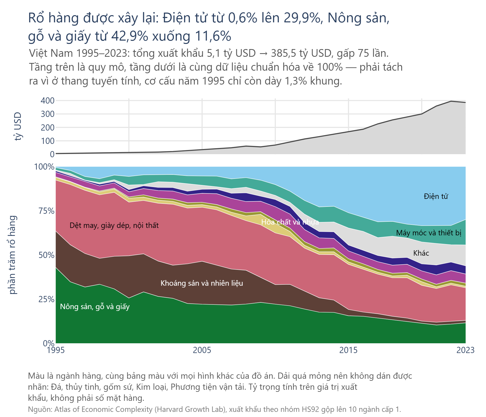
Hình 1. T21 — dòng chảy cơ cấu xuất khẩu 10 ngành, 1995–2023
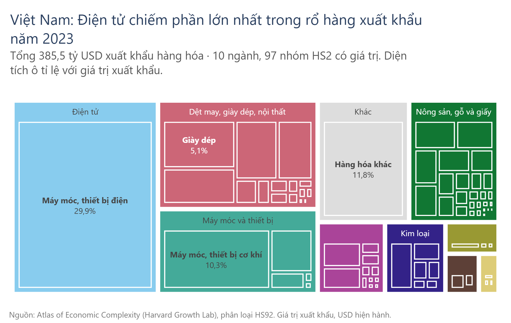
Hình 2. T12 — treemap cơ cấu xuất khẩu Việt Nam, 2023
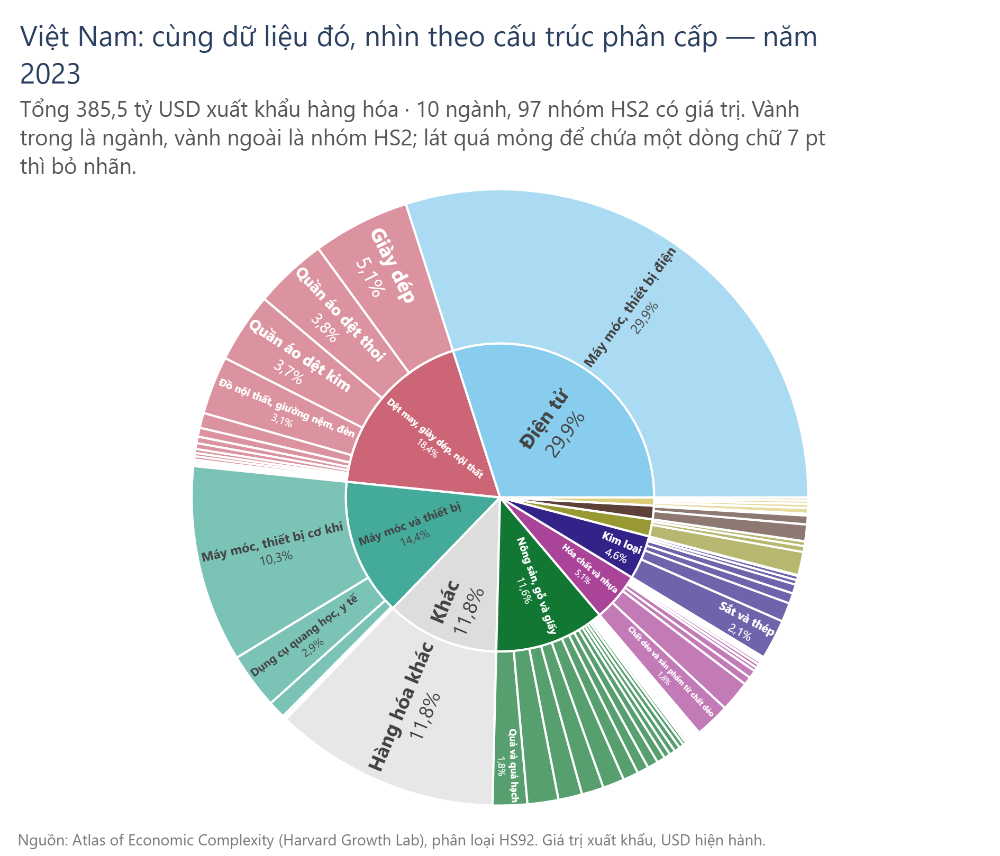
Hình 3. T13 — sunburst 4 tầng cây sản phẩm HS92, Việt Nam 2023
data/processed/network_stats.csv · degree_distribution.csv · threshold_coverage.csv
| Mạng xuất khẩu toàn cầu | 1995 | 2023 |
|---|---|---|
| Nút / cạnh có hướng | 211 / 18.411 | 231 / 27.535 |
| Mật độ | 0,4155 | 0,5183 |
| Đối ứng (có đi có lại) | 0,8235 | 0,8368 |
| Gini trọng số cạnh | 0,9548 | 0,9569 |
| Trung vị số bạn hàng xuất | 78 | 116 |
| Lệch khỏi phân bố đều ¹ | 0,180 | 0,056 |
¹ khoảng lệch lớn nhất giữa CCDF thật và CCDF của một phân bố đều hoàn toàn trên dải bậc; càng gần 0 thì các nước càng trải đều. Đo bằng src/make_degree_loglog.py.
Kết quả 1 — mạng này không phải scale-free, và đó là kết quả chứ không phải lỗi. Mật độ 0,5183 nghĩa là hơn một nửa mọi cặp nước trên thế giới có giao dịch. Mạng xã hội hay mạng trích dẫn thường dưới 1%. Nên không tồn tại "hub" theo nghĩa tô-pô: không có nhóm nhỏ nối với tất cả trong khi phần còn lại nối với vài nước — vì gần như ai cũng nối với nhiều. Biểu đồ log-log của T09 vì thế không ra đường thẳng; nó đi ngang rồi rơi dốc ở mép phải. Để không ai phải tin vào mắt mình, hình vẽ kèm đường khớp lũy thừa tốt nhất và ba con số của phép khớp: R² 0,51, chỗ lệch tệ nhất 41,3 lần, và đường khớp đòi CCDF lớn hơn 100% ở mọi bậc dưới 31 — một đòi hỏi vô nghĩa, vì CCDF là một tỉ lệ.
Kết quả 2 — ba mươi năm toàn cầu hoá san phẳng chuyện "ai nối với ai", nhưng không san phẳng chuyện "luồng nào lớn". Hai dòng cuối bảng trên đi hai hướng khác nhau, và đó là phần đáng viết: độ lệch khỏi phân bố đều giảm từ 0,180 xuống 0,056 (năm 1995 vẫn còn hẳn một lớp nước ít bạn hàng; 2023 thì gần như không còn), trong khi Gini trọng số cạnh gần như đứng yên, 0,9548 → 0,9569. Kết nối thì dàn đều ra, giá trị thì không.
Đo cụ thể mức tập trung ấy trên 27.535 cạnh năm 2023, tổng 21,66 nghìn tỷ USD:
| Giữ lại | % số cạnh | % giá trị |
|---|---|---|
| 100 cạnh lớn nhất | 0,36% | 43,02% |
| 416 cạnh lớn nhất | 1,51% | 68,50% |
| 1.000 cạnh lớn nhất | 3,63% | 83,54% |
| 2.754 cạnh lớn nhất | 10,00% | 95,19% |
| quy tắc lọc đã chốt (B4) — cũng 416 cạnh | 1,51% | 67,84% |
Vứt 98,5% số cạnh vẫn giữ hơn hai phần ba tổng giá trị thương mại thế giới. Hai dòng cuối không trùng nhau, và chỗ lệch đó là một lựa chọn chứ không phải sai số: quy tắc B4 giữ thêm top-3 luồng vào/ra của từng nước ASEAN, nên nó đánh đổi 0,66 điểm phần trăm độ phủ giá trị để cả 10 nước ASEAN đều có mặt ở mọi năm — mà không có chỗ đánh đổi ấy thì năm 1995 Brunei và Lào biến khỏi hình.
Gộp hai kết quả trên ra câu gọn nhất về cấu trúc:
Cấu trúc trung tâm–ngoại vi của thương mại không nằm ở việc ai nối với ai, mà nằm ở việc luồng nào lớn.
Kết quả 3 — và vì vậy một chỉ số mạng quen dùng gần như vô dụng ở đây. Betweenness (mức độ "làm cầu nối") đo trên mạng đầy đủ năm 2023: 172 trong 231 nước bằng đúng 0 (74,5%). Mật độ quá cao nên gần như không đường đi ngắn nhất nào cần vòng qua nước thứ ba. Chi tiết hơn, chính phép nghịch đảo trọng số (vì networkx hiểu trọng số là khoảng cách, còn giá trị thương mại thì ngược lại) đổi hẳn kết luận trên mạng đã lọc:
| Mạng đã lọc 2023, n = 73 | Số nước có betweenness > 0 | Việt Nam |
|---|---|---|
| Có trọng số (1/giá trị) | 15 | 0,0000 — đồng hạng với 57 nước khác |
| Không trọng số | 37 | 0,0050 — hạng 15/73 |
Hai con số đều đúng; chúng trả lời hai câu khác nhau. Có trọng số thì mọi đường ngắn nhất dồn vào ba luồng khổng lồ (Trung Quốc 0,5503 · Đức 0,3036 · Hoa Kỳ 0,2001) và Việt Nam bằng 0; bỏ trọng số thì Việt Nam là một cầu nối nhỏ nhưng có thật. Nên metrics.csv giữ cả hai cột, mọi câu dùng betweenness phải nói rõ đang dùng cột nào, và bảng có thêm cột n_tied_betweenness vì một cái hạng đọc trơ trọi là bẫy — "hạng 16/73" trên cột có trọng số là đồng hạng với 57 nước cùng bằng 0.
Lấy lại: PYTHONIOENCODING=utf-8 .venv/Scripts/python.exe src/analyze_network.py rồi src/compute_metrics.py · src/make_degree_loglog.py
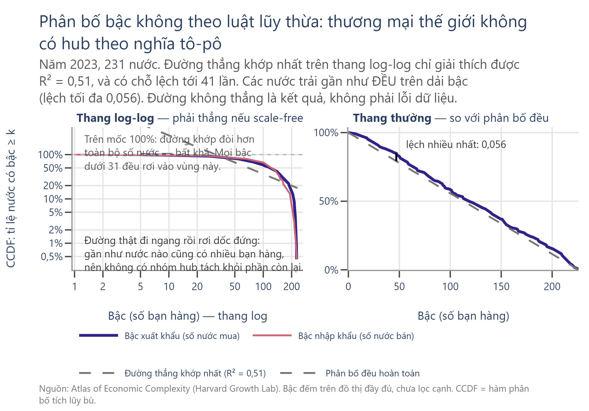
Hình 4. T09 — phân bố bậc log-log, mạng xuất khẩu toàn cầu 2023
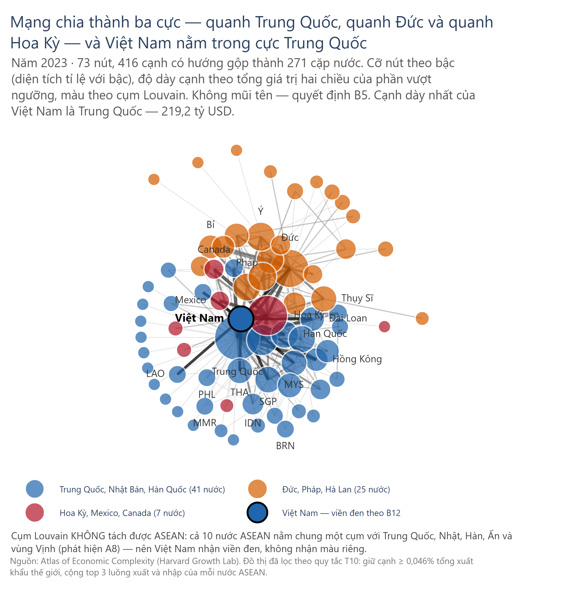
Hình 5. T15 — node-link mạng đã lọc, 2023
Đây là phát hiện phải nói thẳng, vì đề tài có hẳn một lát cắt "Việt Nam – ASEAN". Lát cắt ấy là một câu hỏi, không phải một tiền đề.
Phép đo 1 — Louvain không tìm thấy ASEAN. Trên mạng đã lọc 2023 (73 nút, 416 luồng), phân hoạch ra 3 cụm, modularity 0,337, và ổn định tuyệt đối: 20 hạt giống khác nhau đều cho cùng kết quả, 100% số cặp nước giữ nguyên quan hệ cùng cụm hay khác cụm. Nên đây không phải may rủi của một lần chạy. Cả 10 nước ASEAN rơi vào cùng một cụm, chung với Trung Quốc, Nhật Bản, Hàn Quốc, Ấn Độ, vùng Vịnh và Úc. Thuật toán tìm thấy một khối Á–Thái Bình Dương lấy Trung Quốc làm tâm, và ASEAN tan vào trong đó. Hệ quả cho hình: tô màu theo cụm ở T15 không làm ASEAN nổi lên, nên Việt Nam phải được làm nổi bằng viền đậm (quyết định B12).
Phép đo 2 — tiền nói đúng điều đó. Trong 385,54 tỷ USD Việt Nam bán ra năm 2023, 9 nước ASEAN còn lại nhận 7,77% (29,97 tỷ), trong khi ba thị trường đầu nhận 52,41%: Hoa Kỳ 95,16 tỷ (24,68%), Trung Quốc 86,11 tỷ (22,34%), Hàn Quốc 20,80 tỷ (5,40%). Láng giềng về địa lý, không phải láng giềng về thương mại.
Phép đo 3 — và quỹ đạo đã đổi, thấy được khi so với 1995. Chord T17 chia 73 nước thành 8 khối rồi nhìn riêng các dải chạm vào Việt Nam:
| Bạn hàng của Việt Nam | 1995 | 2023 |
|---|---|---|
| Đông Á | 59,1% | 70,9% |
| ASEAN còn lại | 33,4% | 8,4% |
| Châu Mỹ | không luồng nào vượt ngưỡng | 18,5% |
| Châu Âu | 7,5% | 2,3% |
Năm 1995, bạn hàng lớn thứ hai của Việt Nam chính là ASEAN. Đến 2023 chỗ đó thuộc về châu Mỹ — một khối mà năm 1995 Việt Nam không có lấy một luồng nào vượt ngưỡng. Việt Nam hội nhập vào hành lang Đông Á – châu Mỹ, không hội nhập vào ASEAN.
Ma trận kề T16 bắt thêm một chuyện mà một năm đứng một mình không nói ra: khối lớn đã đổi tâm. Năm 1995 khối 34 nước là một khối xuyên Thái Bình Dương với Hoa Kỳ ở tâm, có cả Nhật Bản, Canada và 10 nước ASEAN. Năm 2023 Hoa Kỳ đã ra khỏi khối đó và đứng đầu một khối Bắc Mỹ riêng 7 nước, còn khối cũ nở lên 41 nước với Trung Quốc ở tâm. Việt Nam ở nguyên trong khối lớn suốt 28 năm — cái đổi là người cầm trịch khối ấy. Kèm theo: tỉ lệ giá trị nằm trong khối rơi từ 83,8% xuống 69,7% trong khi modularity gần như đứng yên (0,343 → 0,337), tức cấu trúc khối lỏng đi chứ không chặt lại; hai số đo hai thứ khác nhau, đừng gộp.
Và Việt Nam dày lên thấy được trên hình: hàng–cột Việt Nam năm 1995 chỉ có 3 ô xuất + 3 ô nhập vượt ngưỡng, năm 2023 là 8 ô xuất + 10 ô nhập; luồng lớn nhất đổi từ bán sang Nhật Bản 1,5 tỷ USD thành mua từ Trung Quốc 133,05 tỷ USD. Trên mạng đã lọc, cặp dày nhất của Việt Nam là Trung Quốc, 219,16 tỷ USD hai chiều — gấp 2,3 lần cặp thứ hai (Hoa Kỳ, 95,16 tỷ).
Cảnh báo khi trích §4.2: mọi tỉ lệ ở ba bảng trên tính trên phần vượt ngưỡng, không phải toàn bộ thương mại. So sánh hai năm vẫn cùng một thước vì quy tắc B4 giữ top-3 bạn hàng của nước trọng tâm ở cả hai năm (xem §4.1 và §2.5).
Lấy lại: src/make_node_link.py · src/make_adjacency_matrix.py --year 1995 · src/make_chord.py --year 1995
Hồi ba là phần có nhiều phát hiện nhất, và nó đi theo ba bước: Việt Nam có đi lên trong bảng xếp hạng năng lực (§5.1); nhưng cách đi lên là một hành lang có hai đầu ngược dấu (§5.2); và hành lang ấy đang hẹp lại ở cả hai đầu — đo bằng một phép đo mà chính báo cáo này đã phải thay (§5.3).
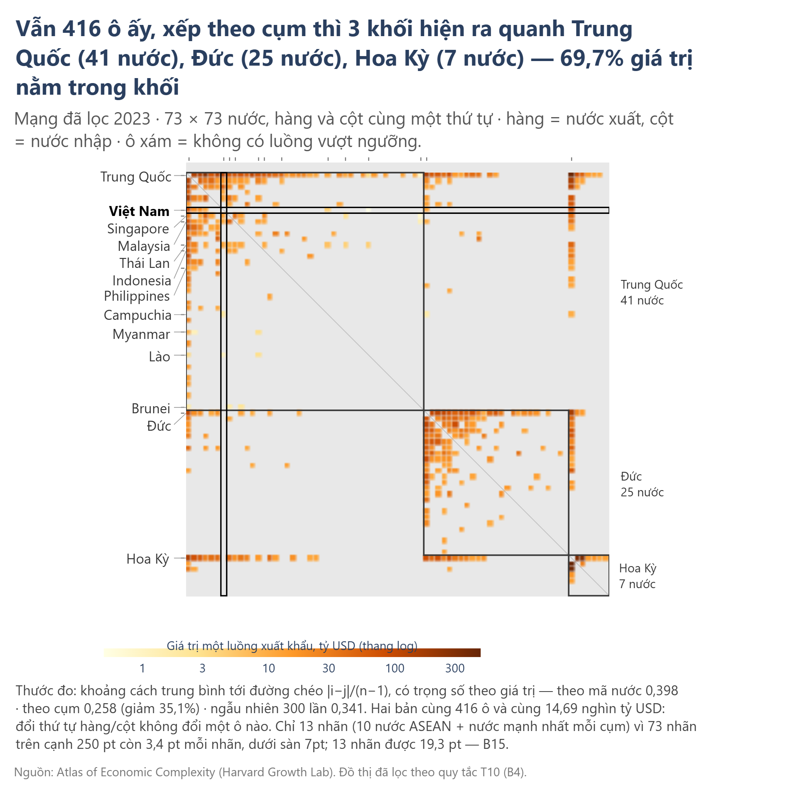
Hình 6. T16 — ma trận kề sắp theo cụm Louvain, 2023
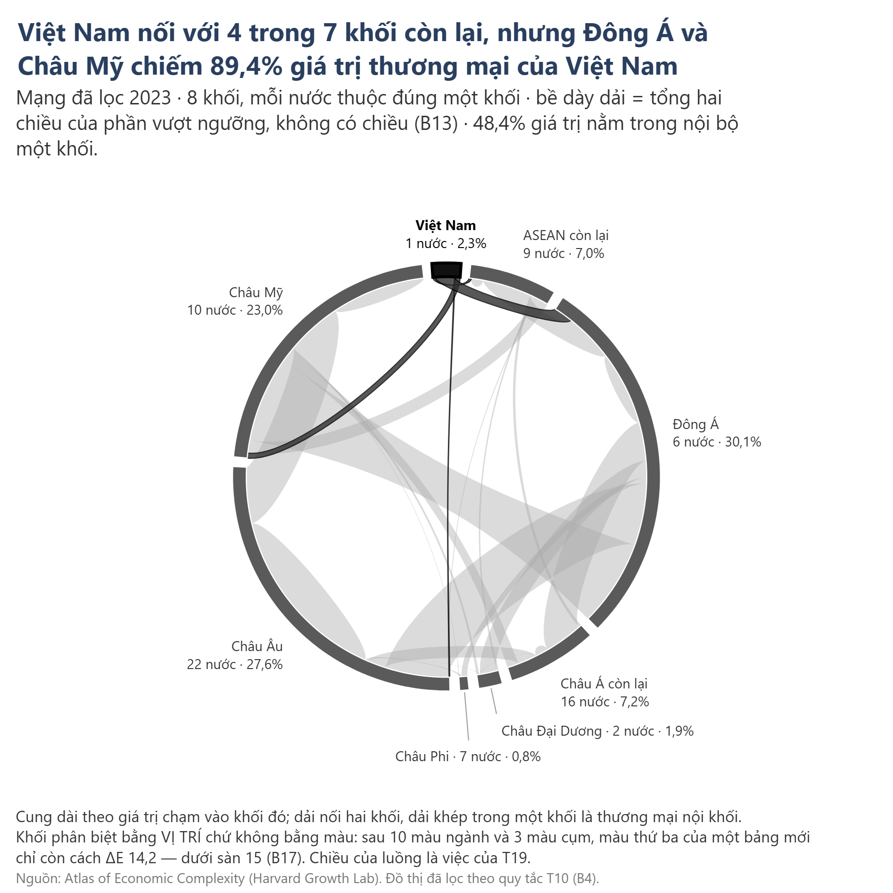
Hình 7. T17 — chord giữa tám khối, 2023
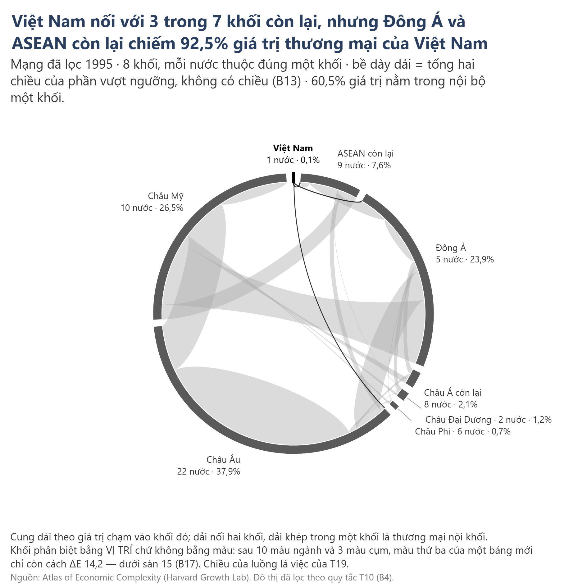
Hình 8. T17 — cùng hình, năm đối chứng 1995
data/processed/country_year.csv
| Việt Nam | 1995 | 2005 | 2015 | 2023 |
|---|---|---|---|---|
| ECI (hạng / số nước xếp hạng) | −1,00 (#181/211) | −0,12 (#132/224) | +0,24 (#109/230) | +0,58 (#78/230) |
| COI — độ "gần" các ngành phức tạp | 0,225 | 0,793 | 1,071 | 1,197 |
| Số mặt hàng xuất được | 186 | 230 | 258 | 285 |
| Xuất khẩu | 5,12 tỷ USD | 32,87 tỷ | 169,41 tỷ | 385,54 tỷ |
ECI (Economic Complexity Index) là chỉ số của Atlas đo độ khó của rổ hàng một nước xuất được — làm được nhiều thứ, và nhiều thứ ít nước khác làm được, thì điểm cao. Ba câu đáng viết:
⚠️ Bắt buộc nêu mẫu số khi trích hạng: số nước được xếp hạng đổi từ 211 (1995) lên 230 (2023), nên "hạng 78" không đọc được nếu thiếu mẫu số. Cột eci_n giữ sẵn mẫu số cho từng năm.
Và một điều phải nói ngay cạnh bảng này, không để sang phần hạn chế: ECI tính trên xuất khẩu gộp. Một nước lắp ráp điện thoại được cộng trọn điểm phức tạp của chiếc điện thoại, bất kể giữ lại bao nhiêu giá trị. Đường ECI dốc đứng ở trên một phần đến từ 115,43 tỷ USD điện tử — mà §6.1 sẽ cho thấy lợi thế so sánh trong điện tử chỉ ở mức 2,23, tức gần đúng bằng tỷ lệ điện tử trong thương mại thế giới.
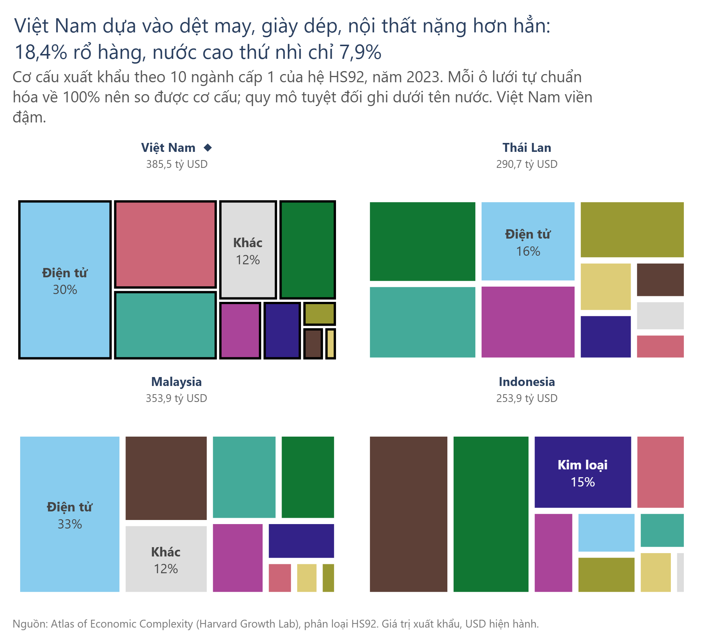
Hình 9. T14 — Việt Nam so với Thái Lan, Malaysia, Indonesia
data/processed/edges.csv · đồ thị đầy đủ, không lọc ngưỡng
| 2023 | Việt Nam mua | Việt Nam bán | Chênh |
|---|---|---|---|
| Trung Quốc | 133,05 tỷ USD | 86,11 tỷ USD | −46,94 tỷ |
| Hoa Kỳ | 9,83 tỷ USD | 95,16 tỷ USD | +85,33 tỷ |
Hai đầu ngược dấu, và đó chính là dấu hiệu mà giả thuyết trung chuyển cần — thứ mà T15 và T17 không nói được vì cả hai đã gộp hai chiều theo quyết định B13. Trung Quốc cấp 40,1% hàng vào; Hoa Kỳ nhận 24,7% hàng ra. Theo vùng: 68,3% hàng vào từ Đông Á, còn hàng ra chia cho Đông Á 37,2% và Bắc Mỹ 26,7%.
Năm đối chứng 1995 ra một hành lang khác hẳn: Singapore cấp nhiều nhất (thâm hụt 1,39 tỷ USD), Nhật Bản mua nhiều nhất (thặng dư 0,60 tỷ). Hành lang không mới — hai đầu của nó đã đổi người, và quy mô gấp 75 lần.
⚠️ Phần "xuất trừ nhập" trên hình Sankey là số học, KHÔNG phải giá trị tăng thêm trong nước. Tách được phần ở lại Việt Nam thì cần bảng vào–ra mà Atlas không có. Đừng để ai đọc hình này thành "Việt Nam chỉ lắp ráp" — cũng đừng để ai đọc nó thành ngược lại.
Hình này dùng đồ thị đầy đủ, và đó là lựa chọn bắt buộc: dựng cùng hình trên đồ thị đã lọc thì cán cân lật dấu thành "nhập siêu 15,17 tỷ USD". Bảng đo chỗ lật dấu đó, cùng quy tắc không so trực tiếp con số của hai nhóm hình, nằm ở §2.5 (phát hiện A15).
Lấy lại: src/make_sankey.py · Hình: output/sankey_vietnam_{1995,2023}.png
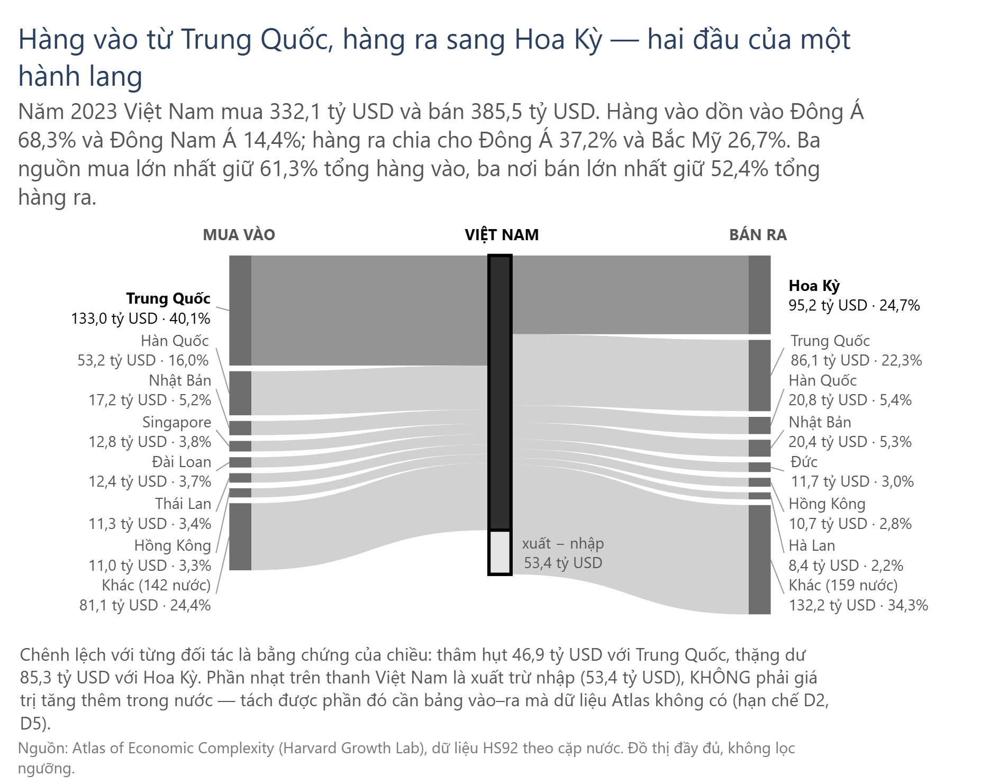
Hình 10. T19 — Sankey nhập → Việt Nam → xuất, 2023
Đây là phát hiện A16, và nó sửa chính câu đang đứng giữa lập luận của đồ án.
Câu cũ. "Xuất khẩu gấp 2,28 lần từ 2015 đến 2023 nhưng số bạn hàng giảm từ 181 xuống 166, trong khi trung vị cả thế giới là tăng 1" — tiền vào nhiều hơn qua ít kênh hơn. Số liệu đúng, và kiểm lại đúng: 130 trong 230 nước tăng số bạn hàng, 85 giảm, trung vị +1, Việt Nam −15.
Nhưng phép đo ấy không bền. Đếm "bạn hàng" là đếm mọi nước có luồng xuất khẩu lớn hơn 0, nên nó đếm cả những luồng cỡ một triệu USD. Ba phép thử:
| Việt Nam bán cho bao nhiêu nước, theo mức sàn giá trị | 1995 | 2002 | 2015 | 2023 |
|---|---|---|---|---|
| trên 0 (phép đo cũ) | 98 | 208 | 181 | 166 |
| trên 10 triệu USD | 32 | 53 | 138 | 128 |
| trên 100 triệu USD | 13 | 23 | 68 | 83 |
| trên 1 tỷ USD | 1 | 4 | 29 | 35 |
Thêm một dấu hiệu nên làm người viết dừng lại: nếu xếp 223 nước theo mức giảm số bạn hàng 2002 → 2023 thì Việt Nam giảm mạnh nhất, −42, trên cả Nga (−38), Triều Tiên (−37), Iran và Syria (−27). Nhưng xuất khẩu của Việt Nam trong cùng kỳ gấp 23,6 lần, còn những nước kia thì bị cấm vận hoặc chiến tranh. Khi một phép đo đặt một nước vào đúng cái nhóm ấy vì những lý do ngược hẳn nhau, vấn đề nằm ở phép đo.
Phép đo bền là mức tập trung của giá trị — HHI (tổng bình phương tỷ trọng từng bạn hàng; càng cao càng dồn vào ít nước) và tỷ trọng ba bạn hàng đầu. Hai phép này không phụ thuộc mức sàn, vì luồng tí hon đóng góp tí hon:
| Việt Nam | 1995 | 2002 | 2013 | 2015 | 2021 | 2023 |
|---|---|---|---|---|---|---|
| HHI | 0,1209 | 0,0687 | 0,0662 ← đáy | 0,0814 | 0,1330 ← đỉnh | 0,1226 |
| Top-3 nhận | 47,21% | 36,31% | 39,25% | 42,99% | 54,75% | 52,41% |
| Số bạn hàng nhận trên 1% | 16 | 21 | 24 | 23 | 20 | 22 |
Hình dạng thật là một chữ V, không phải một đường giảm: Việt Nam đa dạng hoá suốt 18 năm (HHI 0,1209 → đáy 0,0662 năm 2013), rồi dồn lại suốt 10 năm liền (0,0662 → 0,1330 năm 2021), và năm 2023 ở mức 0,1226 — cao hơn cả năm 1995. Thành quả đa dạng hoá của gần hai thập kỷ đã bị trả lại trong mười năm.
Và so với thế giới, chỗ đứng cũng đã đổi. Trong 97 nước xuất khẩu trên 10 tỷ USD năm 2023, trung vị HHI là 0,0921 và Việt Nam ở 0,1226 — hạng 30/97 tính từ phía tập trung nhất. Năm 2015, trên cùng phép đo, Việt Nam ở dưới trung vị: 0,0814 so với 0,0856, hạng 47/84. Trong ASEAN năm 2023, Việt Nam là nước tập trung nhất: Thái Lan 0,066 · Singapore 0,067 · Malaysia 0,089 · Indonesia 0,089 · Philippines 0,090 · Việt Nam 0,123, tức gần gấp đôi Thái Lan.
Câu mới, dùng cho nhịp 3:
Việt Nam không bán qua ít cửa hơn — số cửa đáng kể còn tăng. Việt Nam dồn tiền vào ít cửa hơn: ba thị trường đầu nhận 52,41% hàng xuất năm 2023 so với 39,25% năm 2013, và mức tập trung đã quay về trên mức của năm 1995.
Câu mới mạnh hơn câu cũ ở ba điểm: nó sống sót qua phản biện "anh chỉ đang đếm mấy luồng tí hon"; nó có một năm bước ngoặt (2013) chứ không chỉ hai đầu; và nó so được với thế giới cùng ASEAN trên cùng phép đo. Đặt cạnh §5.2 thì hai phát hiện khớp nhau: tiền dồn vào ba cửa, mà một trong ba cửa ấy (Trung Quốc) đồng thời là nơi hàng vào nhiều nhất.
Và phía mua vào còn tập trung hơn hẳn. Chạy cùng phép đo trên chiều nhập khẩu: HHI 0,0973 (1995) → đáy 0,0791 (2003) → 0,1979 (2023), top-3 nhà cung cấp chiếm 61,3% so với 44,4% năm 1995, và số nhà cung cấp chiếm trên 1% giảm từ 16 xuống 14. Tức mức tập trung đầu vào (0,1979) gấp 1,6 lần mức tập trung đầu ra (0,1226). Hành lang ở §5.2 hẹp ở cả hai đầu, nhưng hẹp hơn ở đầu mua. Lệnh: src/make_time_multiples.py --direction nhap.
Lấy lại: src/make_time_multiples.py (khối KIỂM CHỨNG in cả HHI và tỷ trọng top-3) · dữ liệu gốc data/processed/edges.csv
Hồi bốn trả lời câu hỏi con (c) ở §1.1 — Việt Nam bán cái gì, và cái đó đáng giá đến đâu — rồi chuyển thành bản lề sang phần Đề xuất. §6.1 là phát hiện trung tâm của cả đồ án; §6.2 hỏi phần nào của kim ngạch ấy thực sự ở lại Việt Nam; §6.3 biến bằng chứng thành bốn điều kiện mà bất kỳ đề xuất nào cũng phải thoả.
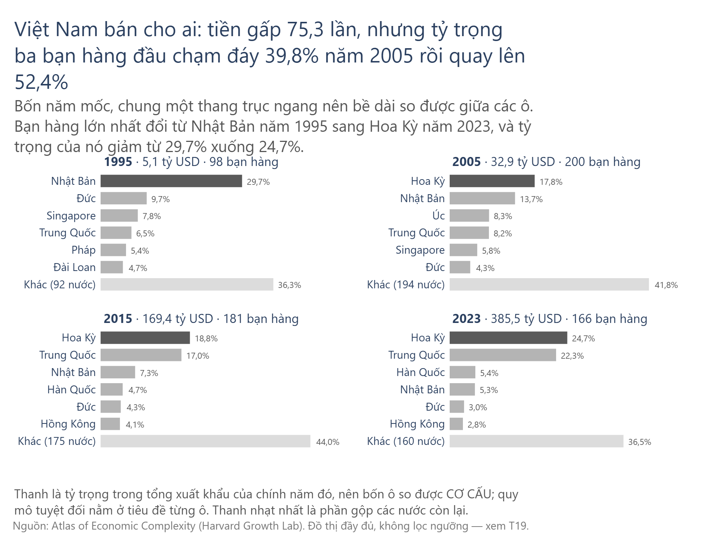
Hình 11. T20 — Việt Nam bán cho ai, bốn năm mốc
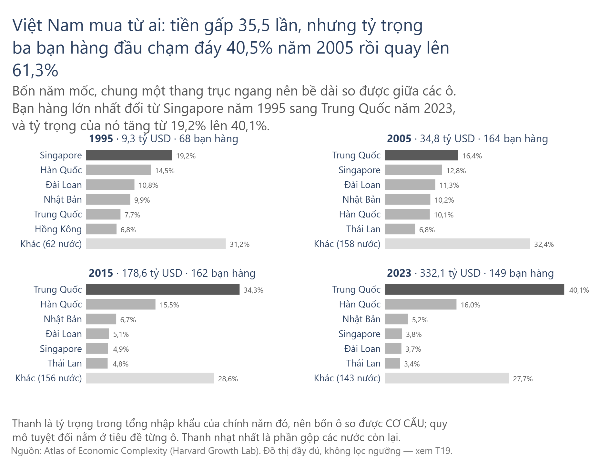
Hình 12. T20 — Việt Nam mua từ ai, bốn năm mốc
data/processed/country_product.csv · Việt Nam, 2023, cấp HS2
| Nhóm hàng | Xuất khẩu | % rổ hàng | RCA | PCI |
|---|---|---|---|---|
| Điện, điện tử và linh kiện | 115,43 tỷ | 29,94% | 2,2299 | +0,925 |
| Máy móc công nghiệp | 39,85 tỷ | 10,34% | 0,9537 | +0,783 |
| Thiết bị quang học, đo lường, y tế | 11,32 tỷ | 2,94% | 0,9052 | +0,934 |
| Giày dép | 19,64 tỷ | 5,09% | 7,5182 | −0,493 |
| Hàng may mặc (dệt kim) | 14,74 tỷ | 3,82% | 3,6736 | −0,663 |
| Hàng may mặc (không dệt kim) | 14,16 tỷ | 3,67% | 3,2852 | −0,870 |
| Đồ nội thất | 11,77 tỷ | 3,05% | 2,3598 | +0,250 |
| Trái cây, hạt | 6,98 tỷ | 1,81% | 2,8782 | −1,332 |
| Thủy sản | 6,25 tỷ | 1,62% | 2,7539 | −1,589 |
RCA (lợi thế so sánh hiện hữu) trả lời: nhóm hàng này chiếm tỷ trọng trong rổ hàng của Việt Nam gấp bao nhiêu lần tỷ trọng của nó trong thương mại thế giới — trên 1 là bán đậm hơn mức bình quân. PCI là độ khó của nhóm hàng, cũng của Atlas. Đọc chéo hai cột cuối ra phát hiện trung tâm của cả đồ án:
Lợi thế so sánh của Việt Nam mạnh nhất đúng ở nơi sản phẩm đơn giản nhất, và yếu nhất đúng ở nơi sản phẩm phức tạp nhất.
Giày dép PCI −0,49 mà RCA 7,52; trái cây −1,33 mà 2,88; thủy sản −1,59 mà 2,75. Ngược lại, hai nhóm phức tạp nhất bảng — thiết bị quang học (PCI +0,934) và máy móc công nghiệp (+0,783) — đều có RCA dưới 1, tức Việt Nam hiện diện ở đó ít hơn mức bình quân thế giới: không có lợi thế so sánh nào cả.
Điện tử là ngoại lệ đáng nói: PCI +0,925, và là nhóm lớn nhất với 115,43 tỷ USD (29,94% rổ hàng) — nhưng RCA chỉ 2,23, tức Việt Nam lớn trong điện tử gần đúng theo tỷ lệ điện tử lớn trong thương mại thế giới, chứ không vượt trội như cách nước này vượt trội ở giày dép (7,52).
Chia rổ hàng theo bốn góc của mặt phẳng RCA × PCI thì thấy nó đang dịch, nhưng chưa đủ:
| Góc | Nghĩa | 2015 | 2023 |
|---|---|---|---|
| Đã thắng | RCA ≥ 1, PCI > 0 | 32,3% | 38,2% |
| Cơ hội | RCA < 1, PCI > 0 | 16,5% | 21,6% |
| Đang kẹt | RCA ≥ 1, PCI ≤ 0 | 44,7% | 36,2% |
| Ngoài cuộc | RCA < 1, PCI ≤ 0 | 6,5% | 4,0% |
Góc "đang kẹt" — bán rất đậm nhưng hàng dễ — co từ 44,7% xuống 36,2% trong tám năm. Rổ hàng đang rời khỏi góc đó, nhưng hơn một phần ba vẫn nằm lại, và các nhóm nằm lại là những nhóm đã giảm tỷ trọng suốt 28 năm.
⚠️ Một chỗ phải nói rõ trước khi ai đó đọc hình T31: ô Chưa phân loại chiếm 11,83% rổ hàng — 45,60 tỷ USD, RCA 2,4408 (cao hơn cả điện tử), PCI −1,206. Đó là nhóm HS2 99 với nút con duy nhất XXXX (Trade data discrepancies) của Atlas, không phải một ngành để đầu tư. Quy tắc chọn trong make_decision_plane.py loại thẳng nó (sector != UNCLASSIFIED); nếu không, ô bán đậm thứ hai trên mặt phẳng quyết định lại là một ô dữ liệu không phân loại được. Xem §A.3.
Lấy lại: src/make_decision_plane.py · src/make_hierarchy_charts.py
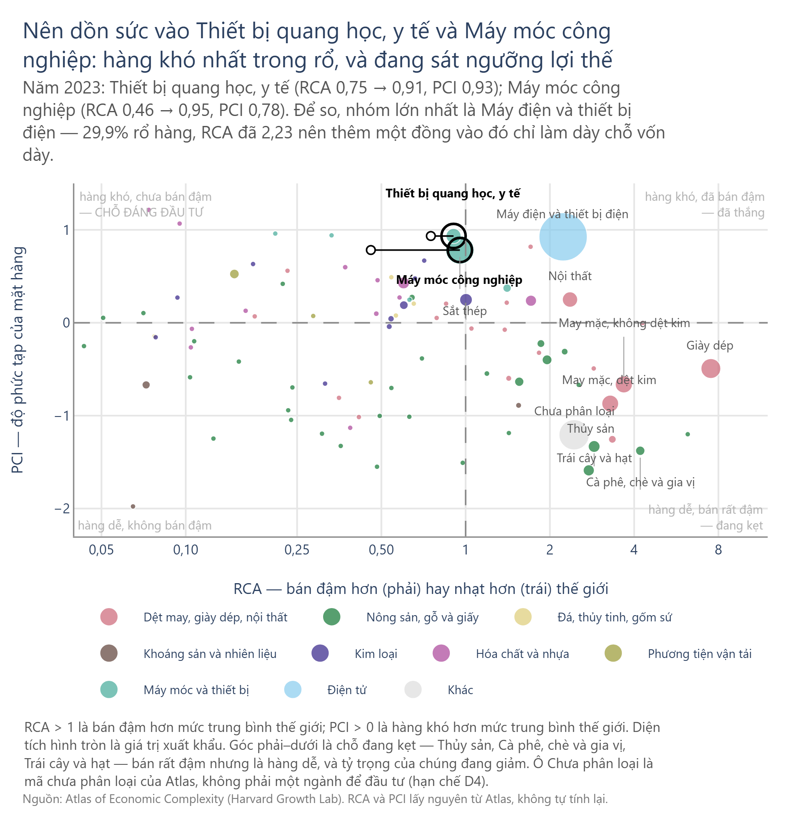
Hình 13. T31 — mặt phẳng quyết định RCA × PCI, 2023
src/map_sector_isic.py · OECD TiVA 2025 · Việt Nam, 2022 (TiVA dừng ở năm đó, không phải 2023 của đồ án)
Mọi con số ở §6.1 là kim ngạch xuất khẩu gộp. Giá trị gia tăng trong nước là phần tiền thực sự được tạo ra bên trong lãnh thổ — doanh thu xuất khẩu trừ phần linh kiện, nguyên liệu mua từ nước ngoài — và Atlas không đo được nó vì thiếu bảng cân đối liên ngành (hạn chế D2, D5). Bộ TiVA (Trade in Value Added) của OECD dựng từ đúng loại bảng đó, phủ Việt Nam, 50 ngành, 1995–2022. Ghép 10 ngành của đồ án sang mã ngành của TiVA qua nhóm HS2 (bảng ghép data/reference/hs2_to_isic4.csv, quyết định B27) thì ra:
| Ngành | Xuất khẩu 2022 | Tỷ trọng | PCI | Giữ lại trong nước |
|---|---|---|---|---|
| Điện tử | 131,6 tỷ USD | 36,9% | +0,92 | 44,2% |
| Máy móc và thiết bị | 43,1 | 12,1% | +0,73 | 47,5% |
| Phương tiện vận tải | 6,3 | 1,8% | +0,29 | 43,8% |
| Hóa chất và nhựa | 21,7 | 6,1% | +0,28 | 45,4% |
| Kim loại | 19,1 | 5,4% | +0,24 | 66,2% |
| Đá, thủy tinh, gốm sứ | 3,7 | 1,1% | +0,14 | 60,2% |
| Dệt may, giày dép, nội thất | 81,5 | 22,9% | −0,56 | 53,0% |
| Khoáng sản và nhiên liệu | 6,3 | 1,8% | −0,66 | 73,8% (khoảng 52,0–73,8%) |
| Nông sản, gỗ và giấy | 42,9 | 12,0% | −0,89 | 60,4% |
Ngành "Khác" không có số: HS99 và HS97 là 38,7 tỷ USD (9,8% xuất khẩu), không ghép được sang mã ngành nào. Bình quân gia quyền cả rổ ghép được là 50,5%, khớp với số TiVA tự công bố (toàn nền kinh tế 51,5%; công nghiệp chế biến 49,5%).
Ba điều đọc được, và một điều không được đọc:
C26 và C28 ở mức HS2, nên khối ghép chung với điện tử (C26+C27+C28) cho 44,2% theo quy mô TiVA.Điều không được đọc: "Việt Nam chỉ lắp ráp". Gần nửa giá trị hàng điện tử vẫn làm ra trong nước. Và "trong nước" là giá trị tạo ra trong lãnh thổ, bất kể chủ doanh nghiệp — lương và thuế ở lại, lợi nhuận của doanh nghiệp nước ngoài có thể chuyển ra — nên số này chưa trả lời hết câu "cái gì ở lại Việt Nam". TiVA là ước lượng từ bảng vào–ra đã cân đối, không phải số đo trực tiếp. Chi tiết và phép đối chiếu bảng ghép: A19.
Lấy lại: src/map_sector_isic.py (mặc định --year 2022), hình bằng src/make_dva_sector.py
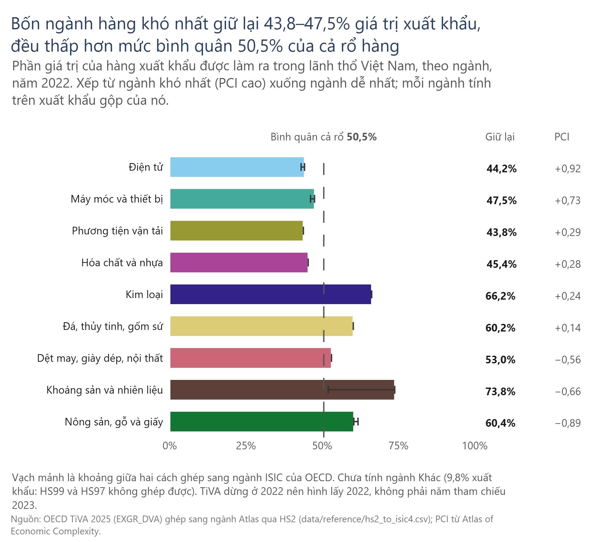
Hình 14. A19 — phần giá trị làm ra trong nước theo ngành, Việt Nam 2022
Phần Đề xuất là mục riêng, nhưng nó không được tự do: bốn nhịp trên đã khoá sẵn bốn điều kiện mà bất kỳ đề xuất nào cũng phải thoả.
Chỗ còn lại sau bốn điều kiện đó là góc "cơ hội" — RCA dưới 1 nhưng PCI dương, 21,6% rổ hàng — và trong góc ấy, hai nhóm đang sát ngưỡng lợi thế: thiết bị quang học, y tế (RCA 0,75 → 0,9052; PCI +0,934) và máy móc công nghiệp (0,46 → 0,9537; +0,783). Đó là đầu vào của mục Đề xuất, kèm quy tắc chọn và ba lần chạy lại nó trên quá khứ (xem §7.1, §7.2, A14 và A17).
Bốn hồi trên là bằng chứng; mục này là việc nên làm. Báo cáo kết thúc bằng một đề xuất chứ không dừng ở mô tả — đó là quyết định B18 — và đề xuất phải suy ra từ một quy tắc viết trong code, không chọn bằng tay.
Phần đề xuất không phải một lựa chọn bằng tay. Nó là đầu ra của một bộ lọc viết trong src/make_decision_plane.py:
c = df[(df["export_value"] >= MIN_EXPORT) # ≥ 1 tỷ USD: đủ lớn để đáng bàn
& (df["pci"] > 0) # khó hơn trung bình thế giới
& (df["rca"] >= RCA_LO) # 0,5: đã có chỗ đứng
& (df["rca"] < RCA_HI) # 1,5: chưa phải nơi đã thắng
& (df["d_rca"] > 0) # đang đi lên, không đi xuống
& (df["sector"] != UNCLASSIFIED)] # không phải ô XXXX — xem §A.3
return c.nlargest(N_PICK, "pci") # lấy 2 nhóm khó nhất còn lạiVì sao phải là một quy tắc. Một lựa chọn bằng tay không kiểm được: ai cũng có thể nói "tôi nghĩ nên dồn vào X". Một quy tắc thì chạy lại được trên quá khứ, và đó là bằng chứng mạnh nhất của cả báo cáo — §7.2.
Chạy quy tắc trên dữ liệu 2023 thì 8 nhóm lọt vào vòng chọn, xếp theo PCI:
| Nhóm hàng cấp 2 | RCA 2015 → 2023 | PCI | Xuất khẩu 2023 | |
|---|---|---|---|---|
| Thiết bị quang học, đo lường, y tế | 0,75 → 0,91 | +0,93 | 11,3 tỷ USD | ← đề xuất |
| Máy móc công nghiệp | 0,46 → 0,95 | +0,78 | 39,8 tỷ USD | ← đề xuất |
| Nhựa | 0,45 → 0,60 | +0,43 | 7,1 tỷ USD | |
| Đồ chơi và dụng cụ thể thao | 0,82 → 1,41 | +0,37 | 3,6 tỷ USD | |
| Giấy và bìa | 0,30 → 0,64 | +0,27 | 2,2 tỷ USD | |
| Sắt thép | 0,60 → 1,00 | +0,25 | 8,1 tỷ USD | |
| Sản phẩm từ sắt thép | 0,58 → 0,60 | +0,19 | 3,8 tỷ USD | |
| Nhôm | 0,40 → 0,54 | +0,04 | 2,1 tỷ USD |
Quy tắc lấy hai nhóm khó nhất trong tám nhóm đó. Cả tám đều là lựa chọn hợp lệ theo bốn điều kiện ở §6.3; thứ phân biệt chúng là PCI, tức độ khó của hàng — và đó đúng là chiều mà §6.1 cho thấy Việt Nam đang yếu nhất.
Lấy lại: PYTHONIOENCODING=utf-8 .venv/Scripts/python.exe src/make_decision_plane.py --year 2023
Đây là phát hiện A17, làm trong lúc ráp báo cáo. Quy tắc ở §7.1 không có tham số nào gắn với năm 2023, nên chạy được ở bất kỳ năm nào có đủ dữ liệu. Chạy ở hai năm quá khứ thì nó chọn ra cái gì, và tám năm sau cái đó đi đâu:
| Chạy quy tắc ở | Lệnh | Nó chọn | Tám năm sau |
|---|---|---|---|
| 2007 | --year 2007 --since 1999 | máy điện – điện tử, RCA 0,573 | RCA 1,996 (2015) → 2,230 (2023); xuất 3,4 → 115,4 tỷ USD |
| 2015 | --year 2015 --since 2007 | thiết bị quang học, 0,751 · sắt thép, 0,604 | 0,905 · 1,003 — vượt ngưỡng lợi thế |
| 2023 | --year 2023 | thiết bị quang học, 0,905 · máy móc công nghiệp, 0,954 | đề xuất của báo cáo này |
Lần chạy 2007 là lần đáng kể nhất: quy tắc chỉ ra điện tử khi nhóm đó mới xuất 3,4 tỷ USD và RCA còn 0,573 — trước đợt bùng nổ đưa nó thành 115,43 tỷ USD và 29,94% rổ hàng (§3.2). Quỹ đạo của bốn nhóm từng được quy tắc chọn, đo ở bốn mốc:
| RCA của nhóm | 1999 | 2007 | 2015 | 2023 |
|---|---|---|---|---|
| Máy điện – điện tử (chọn 2007) | 0,345 | 0,573 | 1,996 | 2,230 |
| Sắt thép (chọn 2015) | 0,017 | 0,265 | 0,604 | 1,003 |
| Thiết bị quang học (chọn 2015 và 2023) | 0,116 | 0,455 | 0,751 | 0,905 |
| Máy móc công nghiệp (chọn 2023) | 0,068 | 0,268 | 0,459 | 0,954 |
Và nền so sánh — phần làm cho ba lần ấy có nghĩa. Phản biện hiển nhiên là "cả rổ hàng cùng lên thì chọn gì chẳng đúng". Đo thử: trong 97 nhóm hàng cấp 2 của Việt Nam, giữa 2015 và 2023 chỉ 44 nhóm (45,4%) có RCA tăng, trung vị thay đổi −0,0178. RCA là tỷ trọng của một tỷ trọng, nên khi rổ hàng đổi, phần lớn các nhóm phải đi xuống — không có cái tide nào dâng sẵn:
| Nhóm con, cửa sổ 2015 → 2023 | Số nhóm | % có RCA tăng | Trung vị thay đổi |
|---|---|---|---|
| Tất cả | 97 | 45,4% | −0,0178 |
| RCA 2015 ≥ 1,5 — nơi đã thắng | 24 | 25,0% | −0,6413 |
| RCA 2015 < 0,5 | 46 | 58,7% | +0,0138 |
| PCI > 0 — hàng khó | 43 | 62,8% | +0,0260 |
| PCI ≤ 0 — hàng dễ | 54 | 31,5% | −0,0733 |
| PCI > 0 và đã tăng ở cửa sổ trước | 19 | 63,2% | +0,0907 |
| Dải RCA 0,5–1,5, không lọc gì khác | 27 | 40,7% | −0,0405 |
Hai dòng cuối là chỗ phải đọc trung thực, và báo cáo nói ra thay vì để bị hỏi:
PCI > 0, không phải dải RCA. Hàng khó tăng RCA ở 62,8% số nhóm, hàng dễ chỉ 31,5%. Còn dải RCA 0,5–1,5 đứng một mình thì kém hơn cả mức bình quân (40,7% so với 45,4%). Dải đó có mặt trong quy tắc vì nó chọn chỗ còn đường để đi — RCA ≥ 1,5 thì đã thắng và 75% số nhóm ở đó đi xuống — chứ không phải vì nó dự báo được.Lấy lại: ba lệnh ở cột Lệnh bảng trên · bảng nền so sánh đo từ data/processed/country_product.csv, hai năm một cặp, lệnh ghi ở §A.5
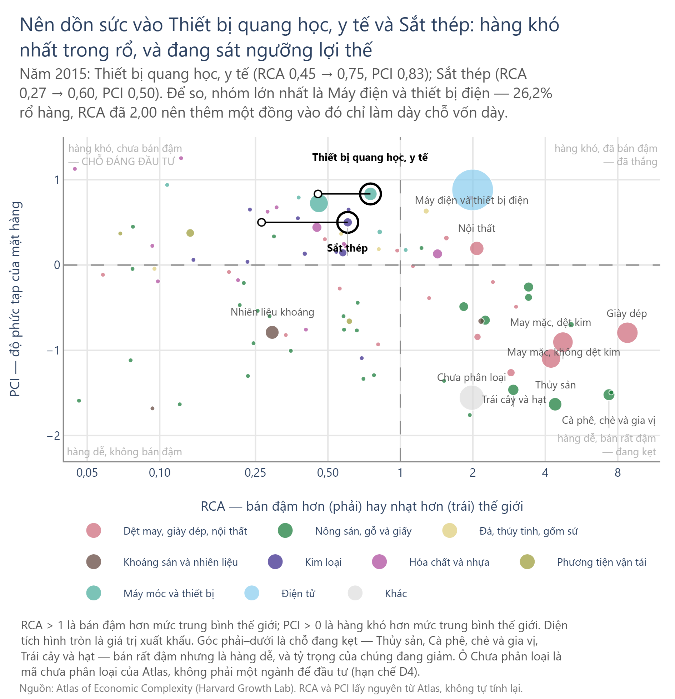
Hình 15. T31 — cùng quy tắc chạy trên dữ liệu 2015
Đề xuất A — về rổ hàng. Phần ưu tiên tăng thêm cho xuất khẩu nên dồn vào thiết bị quang học – đo lường – y tế (HS90; RCA 0,905; PCI +0,934; 11,32 tỷ USD) và máy móc công nghiệp (HS84; RCA 0,954; PCI +0,783; 39,85 tỷ USD) — hai nhóm khó nhất trong rổ hàng mà Việt Nam đã có chỗ đứng và đang sát ngưỡng lợi thế — thay vì đào sâu thêm vào lắp ráp điện tử (RCA đã 2,23, chiếm 29,94% rổ hàng, và đầu vào đi qua đúng hành lang hẹp ở §5.2), và không dồn thêm vào nhóm RCA cao – PCI thấp (thủy sản 2,75 / −1,59; cà phê 4,21 / −1,38; trái cây 2,88 / −1,33), vốn đã giảm tỷ trọng suốt 28 năm.
Hai nhóm này thoả cả bốn điều kiện mà §6.3 đã khoá: không đo bằng phép đếm bạn hàng, không dồn thêm vào điện tử, không dồn thêm vào góc hàng dễ, và có mốc bác bỏ viết sẵn (§7.5). Chúng cũng ở hai cỡ khác nhau, nên là hai loại việc khác nhau: HS84 đã 39,85 tỷ USD (10,34% rổ hàng) — một nhóm lớn, mỗi điểm phần trăm RCA đổi được nhiều tiền; HS90 chỉ 11,32 tỷ (2,94%) — một chỗ đặt cược nhỏ hơn nhưng là nhóm khó nhất còn lại trong rổ.
Đề xuất A không dựa vào chuyện hai nhóm này giữ lại nhiều giá trị hơn điện tử. §6.2 cho thấy ngành máy móc giữ 47,5% (khoảng 46,2–47,5%) so với 44,2% của điện tử, và hàng càng khó thì càng ít ở lại (Spearman −0,47). Lý do còn đứng được là độ khó của hàng và việc rời khỏi rổ đang tập trung. Hệ quả phải nói trước: mỗi đô la xuất khẩu thêm ở hai nhóm này mang về khoảng 44–48% giá trị trong nước, thấp hơn bình quân cả rổ (50,5%), nên kim ngạch có thể tăng nhanh hơn phần ở lại. Vì thế đề xuất kèm một mốc đo phần ở lại (§7.4) và một điều kiện đổi ý (§7.5).
Đề xuất B — về mức tập trung. §5.3 là một phát hiện đòi một câu trả lời, không chỉ một lời cảnh báo. Mục tiêu phải phát biểu bằng tỷ trọng giá trị, không bằng số bạn hàng: đưa tỷ trọng ba thị trường đầu từ 52,41% xuống dưới mức 2013 là 39,25%, tức HHI từ 0,1226 về quanh trung vị của 97 nước xuất trên 10 tỷ USD là 0,0921. Phía mua vào cấp thiết hơn: HHI 0,1979, ba nhà cung cấp đầu 61,3%, riêng Trung Quốc 40,1% hàng vào.
Vì sao Đề xuất B không phải "tìm thêm thị trường": thêm một nước nhận 5 triệu USD không đổi được HHI dù nó làm số bạn hàng tăng — đó đúng là cái bẫy mà §5.3 đã đo. Và vì sao hai đề xuất đi cùng nhau: hàng khó hơn thì bán được cho nhiều nơi khó hơn, nên A là một trong vài đường dẫn tới B mà dữ liệu này nhìn thấy được.
Báo cáo không dự báo (ranh giới đã chốt ở T01), nên những con số dưới đây là mốc để kiểm lại đề xuất, không phải dự đoán về tương lai:
| Mốc kiểm | Hiện tại (2023) | Ngưỡng | Lệnh kiểm |
|---|---|---|---|
| RCA của HS90 vượt 1,00 | 0,9052 | ≥ 1,00 | src/make_decision_plane.py |
| RCA của HS84 vượt 1,00 | 0,9537 | ≥ 1,00 | src/make_decision_plane.py |
| Góc đã thắng nở thêm | 38,2% rổ hàng | > 38,2% | src/make_decision_plane.py |
| Góc đang kẹt co lại | 36,2% rổ hàng | < 36,2% | src/make_decision_plane.py |
| Tỷ trọng ba thị trường đầu | 52,41% | < 52,41%, đích 39,25% | src/make_time_multiples.py |
| HHI đầu vào | 0,1979 | < 0,1979 | src/make_time_multiples.py --direction nhap |
Phần giữ lại trong nước của khối C26+C27+C28 (2022) | 44,2% | ≥ 44,2%, tức ngừng tụt | src/map_sector_isic.py |
Cả bảy mốc đều đọc được từ chính các script đã có, nên lần dữ liệu Atlas sau là kiểm lại được ngay — không cần viết thêm gì.
Một đề xuất có điều kiện bác bỏ thì mới là đề xuất; không có thì chỉ là một ý thích. Bốn điều kiện; ba điều kiện đầu theo thứ tự dễ xảy ra, điều kiện thứ tư được thêm sau khi có số TiVA (A19):
d_rca > 0 loại nhóm đang đi xuống.Ba chỗ phải nói trước khi bị hỏi, vì chúng là ranh giới của dữ liệu chứ không phải của lập luận:
C26+C27+C28) giữ khoảng 44% trong nước năm 2022. Nhưng đó là số của cả ngành, không tách riêng HS84 và HS90 được (§6.2), nên báo cáo vẫn không đo được riêng hai nhóm ấy.N_PICK hoặc nới RCA_HI thì danh sách đổi, và bảng tám nhóm ở §7.1 để ngay đó cho người đọc tự xét.Nêu ra thì được điểm trung thực; giấu đi mà bị hỏi thì mất nhiều hơn.
D1. Dữ liệu dừng ở 2023, không phải 2024. Bản Atlas 2024 còn tạm: thiếu 1.781 cặp nước, riêng Việt Nam mất 37 bạn hàng trị giá 11,4 tỷ USD. Xem §2.3.
D2. ECI tính trên xuất khẩu gộp → nó thưởng điểm cho việc lắp ráp hàng phức tạp bất kể nước đó giữ lại được bao nhiêu giá trị. Nói cách khác, ECI đo cái gì đi qua Việt Nam, chưa hẳn là cái gì ở lại Việt Nam. Phần này đã đo được ở mức ngành (xem D5): hàng điện tử giữ 44,2% giá trị trong nước, và hàng càng phức tạp thì tỷ lệ trong nước càng thấp (ρ = −0,47). Nên ECI đúng là thiên về hàng ít giá trị ở lại, nhưng ở mức vừa chứ không tuyệt đối.
D3. Node-link vứt 98,5% số cạnh. Nó không đọc được là "bản đồ thương mại toàn cầu", mà là "bản đồ các luồng thương mại lớn, cộng chỗ đứng của ASEAN trong đó". Ai muốn nhìn phần đuôi phải xem ma trận kề (T16) — ma trận vẽ đủ cả 416 luồng có hướng, không gộp hai chiều như node-link, và không có cạnh nào chồng lên cạnh nào. Nhưng nó cũng chỉ vẽ đúng 416 luồng ấy: cả hai hình đứng trên cùng một đồ thị đã lọc, nên ma trận không cứu được cái 98,5% đã bỏ.
D4. Dữ liệu dừng ở HS2 (97 nhóm hàng). Chi tiết hơn cần file HS4 452 MB, khoảng 4,2 giờ tải ở tốc độ đo được. Hệ quả cụ thể: nhóm "Điện, điện tử và linh kiện" gộp cả chip lẫn dây điện vào một ô.
D5. Giá trị gia tăng chỉ đo được ở mức ngành, năm 2022, và là ước lượng. Atlas không có bảng vào–ra, nên nhóm lấy thêm bảng TiVA 2025 của OECD (80 nền kinh tế, 50 ngành, đến 2022) và ghép 10 ngành sang mã ISIC qua nhóm HS2 (A19). Kết quả: bình quân hàng hóa ghép được giữ 50,5% trong nước; điện tử 44,2% (chiếm 36,9% xuất khẩu), dệt may 53,0%, nông sản 60,4%, kim loại 66,2%. Bốn điều phải nói kèm:
Phần "xuất trừ nhập" trên Sankey (T19) vẫn là số học, không phải giá trị tăng thêm.
Hai hạn chế cuối cùng nối thẳng vào chỗ yếu nhất của đề xuất, nên báo cáo nói ra trước thay vì chờ bị hỏi. Điểm mạnh bù lại là phép thử lại ở §7.2.
Năm hạn chế trên là giới hạn của dữ liệu. Còn đúng một câu hỏi mà phát hiện A16 (§5.3) mở ra mà chính nó không đóng lại được:
Vì sao các luồng xuất khẩu nhỏ biến mất? §5.3 đo được rằng chúng biến mất (166 bạn hàng năm 2023 so với 208 năm 2002) và đo được rằng chúng không đáng kể về tiền (47 nước rời danh sách mang theo 0,59% kim ngạch). Nhưng dữ liệu này không phân biệt được hai cách giải thích: thương mại với những nước đó thật sự dừng, hay nó đã dồn qua trung gian rồi được ghi sang tên nước khác. Hai cách ấy có ý nghĩa khác nhau hẳn cho Đề xuất B ở §7.3, và tách được chúng cần dữ liệu luồng hàng theo chặng mà Atlas không có.
Bốn câu hỏi mở còn lại đều đã nằm trong năm hạn chế ở §8.1 và không nhắc lại ở đây: giá trị ở lại Việt Nam (D2, D5) · chi tiết dưới cấp HS2 (D4) · phần đuôi của mạng đã bị lọc (D3) · năm 2024 (D1). Riêng "giá trị ở lại Việt Nam" nay đã đo ở mức ngành; phần còn thiếu là mức HS4, năm 2023 và chủ sở hữu (D2, D5).
Trả lời câu hỏi nghiên cứu. Năm 2023 Việt Nam đứng ở hạng 16/230 theo giá trị xuất khẩu, nhiều nhất ASEAN, trong một mạng lưới mà quá nửa số cặp nước có giao dịch trực tiếp (mật độ 0,5183) nên vị trí không được tạo bởi việc nối với ai mà bởi luồng nào lớn. Vị trí đó được tạo nên bởi ba thứ đo được: một rổ hàng đã được xây lại gần như từ đầu (điện tử 0,6% → 29,9%; nông sản 42,9% → 11,6%), một hành lang mua của Đông Á (68,3% hàng vào) và bán cho Bắc Mỹ (Hoa Kỳ +85,33 tỷ USD), và một năng lực đi lên thật nhưng chậm hơn khối lượng (ECI #181/211 → #78/230, hạng 5 trong ASEAN).
Và điều đáng nói nhất không nằm ở chỗ Việt Nam đã đi được bao xa, mà ở chỗ cách đi ấy đang hẹp lại: tỷ trọng ba thị trường đầu 52,41% so với 39,25% năm 2013, HHI 0,1226 đã vượt mức của năm 1995, và lợi thế so sánh mạnh nhất vẫn đúng ở nơi hàng dễ nhất (giày dép RCA 7,52 / PCI −0,49) trong khi hai nhóm khó nhất rổ hàng vẫn ở RCA dưới 1. Từ đó ra đề xuất ở phần 7, và nó kèm sẵn bốn điều kiện để bị bác bỏ. Một trong bốn đo phần giá trị ở lại: số TiVA cho thấy hai nhóm được đề xuất giữ khoảng 44–48% giá trị trong nước, không hơn điện tử (§6.2), nên đề xuất đứng trên độ khó của hàng và mức tập trung chứ không đứng trên việc giữ nhiều hơn.
Một kết luận về phương pháp, và nó đáng kể hơn vẻ ngoài. Trong lúc làm, đồ án đã tự bác hai phát biểu của chính mình vì đo lại thì không đúng:
| Phát biểu cũ | Đo lại ra gì | Hệ quả |
|---|---|---|
| "Số bạn hàng đạt đỉnh 200 nước năm 2005" | đỉnh thật 2002, 208 nước — con số cũ chỉ tìm đỉnh trong bốn năm được vẽ | sửa A13, sửa tiêu đề hình T20 |
| "Tiền vào nhiều hơn qua ít kênh hơn" | phép đếm bạn hàng không bền: ở mức sàn 100 triệu USD thì số kênh tăng 13 → 83 | thay bằng HHI và tỷ trọng top-3 (A16) |
Cả hai đều bị bắt bởi cùng một quy ước làm việc: mọi con số in trên hình phải được suy lại từ dữ liệu trong chính lần chạy đó, và mỗi hình phải render thêm một năm đối chứng rồi đọc kết quả (§A.4). Quy ước đó tốn thời gian và đã trả lại bằng việc không để một câu sai nào đi vào bài. Đó cũng là lý do báo cáo này dám kết bằng một đề xuất: không phải vì tin vào kết luận, mà vì mỗi con số đỡ cho nó đều có một lệnh in ngay cạnh để người đọc tự chạy lại.
Năm mục dưới đây đã nằm trong phần Phương pháp luận khi mục đó được viết (T25) và được chuyển về phụ lục khi ráp báo cáo (T27), để phần thân giữ đúng mạch lập luận. Chúng giữ nguyên nội dung, chỉ đổi số hiệu — §A.1 trước là mục 2.4, §A.2 là 2.6, §A.3 là 2.8, §A.4 là 2.9, §A.5 là 2.12 của bản Phương pháp luận. Không mục nào bị cắt bớt.
Mười bảng trung gian trong data/processed/ do ba script sinh ra, không phải một: build_intermediate.py dựng năm bảng đầu (nước, cạnh, cây sản phẩm, nước × sản phẩm, nước × năm), analyze_network.py dựng ba bảng thống kê mạng, và compute_metrics.py dựng hai bảng chỉ số theo nước.
Ba script của giai đoạn đầu — build_intermediate.py, check_raw_data.py và make_mock.py — chỉ dùng thư viện chuẩn của Python, chạy được ngay mà không cần cài gì.
| File | Nội dung | Dòng |
|---|---|---|
nodes.csv | nước: mã, tên tiếng Việt, vùng, châu lục, is_focus | 233 |
edges.csv | luồng xuất khẩu song phương 1995–2024 | 750.855 |
tree.csv | cây sản phẩm HS92 bốn tầng | 6.390 |
country_product.csv | nước × nhóm hàng HS2 × năm, kèm RCA và PCI | 539.986 |
country_year.csv | nước × năm: ECI, thứ hạng, COI, diversity | 6.755 |
network_stats.csv | mỗi năm một dòng: nút, cạnh, mật độ, đối ứng, Gini | 30 |
degree_distribution.csv | phân bố bậc dạng dài, có ccdf | 1.094 |
threshold_coverage.csv | 21 phương án lọc cạnh — bằng chứng cho §2.5 | 21 |
metrics.csv | chỉ số mạng theo nước, mỗi nước hai dòng (§2.5) | 304 |
metrics_top20.csv | top 20 nước xuất khẩu kèm chỉ số mạng | 20 |
Hai quy ước lọc ở tầng này:
export_value = 0 → loại bỏ. Một luồng bằng 0 không phải một cạnh, cũng không phải một dòng xuất khẩu (B3).is_focus = cả 10 nước ASEAN, không chỉ Việt Nam, vì đề tài có lát cắt Việt Nam–ASEAN (B2).Dữ liệu thô không bao giờ được commit (Nguyên tắc #5 của nhóm, quyết định B8). Cả mười file trung gian và toàn bộ output/ đều bị .gitignore loại trừ — sinh lại bằng lệnh, không lưu vào repo. Có đúng một ngoại lệ, và nó là một lỗi đã ghi nhận: một blob cc_year.csv 28,4 MB lọt vào lịch sử main từ sớm và không xoá được nữa vì hai PR đầu gộp bằng merge commit. Nhóm đã thống nhất để nguyên — viết lại lịch sử một repo đang dùng chung thì lợi ít hại nhiều — và từ đó gộp bằng squash.
Toàn bộ đều là script, trả về mã thoát khác 0 khi không đạt, nên cắm được vào CI. Đây là phần chứng minh dữ liệu được kiểm chứ không phải được tin.
| # | Cửa kiểm | Kiểm gì | Kết quả đo được | ||||
|---|---|---|---|---|---|---|---|
| 1 | check_raw_data.py | 8 mục trên file thô, kể cả "16 nước xuất khẩu lớn nhất phải có mặt" | ĐẠT | ||||
| 2 | ECI đã chuẩn hoá | mỗi năm trung bình ≈ 0, độ lệch chuẩn ≈ 1 trên toàn bộ các nước — đây là tính chất của cách tính, nên đọc lệch cột hay mất dòng là hai số này trồi ngay | `\ | trung bình\ | ≤ 0,076; \ | độ lệch chuẩn − 1\ | ≤ 0,054` |
| 3 | Trung bình RCA có trọng số = 1 | tính chất toán học của công thức Balassa: với mỗi sản phẩm, trung bình RCA của các nước có trọng số theo quy mô nước phải đúng bằng 1. Sai là công thức sai | lệch 1,0 × 10⁻¹⁵ (xem §2.4) | ||||
| 4 | Đối chiếu chéo ba file | ba file Atlas đo cùng nền thương mại từ ba góc | khớp 0,000% | ||||
| 5 | check_tree.py | cây HS92: số nút từng tầng, nút mồ côi, chu trình, quy tắc mã | {1: 10, 2: 97, 4: 1.243, 6: 5.040}, 0 nút mồ côi; 1 lỗi + 1 lưu ý → §A.3 | ||||
| 6 | check_palette.py + check_readability.py | hai cửa chặn thị giác: bảng màu và khả năng đọc | ĐẠT; cả 10 script dựng hình đều trên khung point (§A.4) |
Cửa số 5 đáng chú ý vì nó không sạch, và nhóm giữ nguyên kết quả không sạch đó thay vì nới điều kiện kiểm cho nó qua — chi tiết ở §A.3. Một phép kiểm chỉ có giá trị khi nó được phép báo lỗi.
src/check_tree.py chạy 31 mục kiểm trên cây HS92: 29 mục ĐẠT, 1 lỗi, 1 lưu ý. Nhóm giữ nguyên hai kết quả đó trong báo cáo thay vì sửa dữ liệu của Atlas.
3501 nằm sai nhánhQuy tắc của mã HS là mã con nối dài mã cha — 3502 phải nằm dưới 35. Có đúng một nút phá quy tắc đó:
| Nút | Tên | Cha hiện tại | Cha đúng theo quy tắc mã |
|---|---|---|---|
3501 | Casein, caseinates and casein glues | HS2 34 — xà phòng, sáp, chất đánh bóng | HS2 35 — albuminoid, tinh bột biến tính, keo dán, enzyme |
Sáu nút em của nó (3502 Albumins, 3503 Gelatin, 3504 Peptones, 3505 Dextrins, 3506 Glues and adhesives, 3507 Enzymes) đều nằm đúng dưới 35.
Ảnh hưởng: không có, với mọi hình trong báo cáo này — và nói được điều đó là vì đã kiểm, không vì đoán. Hai nút 34 và 35 cùng thuộc một ngành (ngành 6, hoá chất), nên không một tổng theo ngành nào bị lệch. Toàn bộ hình trong báo cáo dừng ở tầng 1 (10 ngành) và tầng 2 (97 nhóm hàng), còn chỗ lệch nằm ở tầng 4. Ghi lại vì bất kỳ ai đi tiếp xuống HS4 sẽ gặp nó.
XXXX dưới nhóm 99, và 11,83% rổ hàngAtlas giữ chỗ cho phần số liệu không khớp bằng một nút riêng: nút XXXX — "Trade data discrepancies" — nằm dưới HS2 99 "Other", thuộc ngành 10 (Chưa phân loại, màu xám #DDDDDD). Đây không phải một lỗi cây, mà là một mã giữ chỗ hợp lệ của nguồn. Nhưng nó có một hệ quả thật, và lớn:
Nhóm 99 chiếm 45,60 tỷ USD = 11,83% xuất khẩu Việt Nam năm 2023, với RCA 2,4408 và PCI −1,206.
RCA 2,4408 của ô đó cao hơn cả điện tử (2,23) — tức nếu để nguyên thì một trong những ô "bán đậm nhất" trên mặt phẳng quyết định (T31) lại là một ô dữ liệu không phân loại được, không phải một ngành hàng có thật để mà đề xuất đầu tư. Vì vậy quy tắc chọn đề xuất ở §7.1 loại thẳng ngành Chưa phân loại (sector != UNCLASSIFIED), và hình T31 vẽ nó ở màu xám trung tính để người đọc thấy nó tồn tại mà không đọc nó như một lựa chọn.
Toàn bộ quy ước nằm ở docs/style-guide.md và được áp bằng src/reference_data.py; không có hằng số nào viết lại tại chỗ trong các script vẽ. Bốn quy ước có ảnh hưởng tới việc đọc hình, và cả bốn đều đã được đo chứ không chỉ chọn:
1. Khung hình tính bằng point, không bằng pixel. Khổ hình đầy là 6,30 inch × 72 = 453,6 pt. Sàn cỡ chữ là 7 pt (style guide §7). Hai điều này chỉ kiểm được cùng nhau nếu khung đo bằng cùng đơn vị với chữ — và trước T22 thì không: các script cũ xuất PNG với khung 6,30 × 200 = 1.260 đơn vị nhưng truyền cỡ chữ bằng point vào đó, tỷ số 200/72 = 2,7778. Hệ quả đo được: một dòng nguồn khai 7 pt in ra khoảng 2,5 pt, dưới sàn. Lỗi này (B16) có thật ở năm hình đầu (T09, T12, T13, T14, T15) và đã sửa ở T22 — sửa đơn vị buộc phải bố cục lại cả năm hình, vì ở cỡ chữ đúng thì tiêu đề tràn khung (layout.title của plotly không tự ngắt dòng), chú giải cuộn thêm hàng đè lên ghi chú nguồn, và nhãn nút chồng nhau. check_readability.py xác nhận hiện cả 10 script đã trên khung point.
2. Màu là của ngành hàng, chỉ thế thôi. 10 màu ngành lấy thang Tol muted, đổi Khoáng sản sang nâu đậm: ΔE nhỏ nhất 16,1 ở mắt thường và 11,6 qua cả ba dạng mù màu (bảng Tableau 10 dùng tạm trước đó có Nông sản trùng hẳn Phương tiện vận tải với người mù lục, ΔE = 0,7). Cụm Louvain cần màu mà không phải ngành, nên có bảng riêng, qua cùng bộ kiểm: ΔE 24,7 mắt thường, 13,5 ở dạng mù màu khó nhất, và cách màu ngành gần nhất 20,0 (B11, B14).
3. Việt Nam nổi bằng hình dạng, không bằng màu (B12). Đã thử thêm màu thứ 11: mọi màu cam/đỏ tách được khỏi 10 màu ngành ở mắt thường (ΔE 22–27) đều tụt xuống ΔE 4–8 khi mô phỏng mù màu. Thay bằng viền đen 1,5 px và nhãn đậm. Đi xa hơn, src/probe_colour_space.py đo được rằng không gian màu in được đã hết chỗ: sau 10 màu ngành và 3 màu cụm, màu thứ ba của một bảng thứ ba chỉ còn ΔE 14,2, dưới sàn 15. Vì vậy chord (T17) mã hoá khối bằng vị trí, không bằng màu (B17).
4. Số viết theo kiểu Việt Nam: dấu phẩy thập phân, dấu chấm hàng nghìn, đi qua R.fmt_vn / R.fmt_pct / R.fmt_usd — kể cả nhãn trục, và trục log của plotly phải đặt tickmode="array" + tickvals + ticktext, nếu không nó tự dán nhãn tick phụ theo kiểu Anh.
Nhãn thì bị sàn 7 pt ràng buộc, và chỗ nào không đủ thì bỏ nhãn chứ không thu chữ. Ví dụ đo được: ma trận kề có cạnh vùng vẽ 250,3 pt trên khung 453,6 pt; chia cho 73 nước còn 3,4 pt mỗi nhãn, và không bố trí nào cứu được vì 73 × 7 pt = 511 pt đã dài hơn cả cạnh khung. Nên ma trận ghi 13 nhãn: 10 nước ASEAN (lát cắt của đề tài) + nước mạnh nhất mỗi cụm → 19,3 pt mỗi nhãn, đạt sàn (B15).
Toàn bộ tiêu đề trên các hình tuân theo một nguyên tắc: tiêu đề dựng từ dữ liệu của chính lần chạy đó, không viết sẵn. Lý do rất thực tế — một tiêu đề viết sẵn sẽ in ra một câu sai khi chạy năm khác. Đã bắt được bốn lần:
| Hình | Câu viết sẵn | Dữ liệu nói gì |
|---|---|---|
| T09 | "gần như đều" | sai cho năm 1995 (lệch khỏi phân bố đều 0,180 so với 0,056) |
| T15 | "ba cụm là ba châu lục" | sai — cụm lớn là một khối Á–Thái Bình Dương |
| T14 | "Việt Nam dựa mạnh vào dệt may" | năm 1995 là nông sản, gỗ và giấy 42,9% so với 26,0% của nước cao thứ nhì |
| T20 | "đạt đỉnh 200 nước năm 2005" | đỉnh thật là 2002 với 208 nước — câu cũ chỉ tìm đỉnh trong bốn năm được vẽ (A13, A16) |
Vì vậy mỗi script còn render thêm một năm đối chứng (thường 1995) và in một khối kiểm chứng ra stdout, đủ để kiểm lại khẳng định trên tiêu đề mà không cần mở code.
Môi trường đo được: Python 3.9.13, plotly 7.1.0, networkx 3.2.1, pandas 2.2.3, kaleido (xuất PNG). Chạy trong venv của repo:
PYTHONIOENCODING=utf-8 .venv/Scripts/python.exe src/<script>.pyThứ tự pipeline — năm bước đầu không cần thư viện ngoài:
python src/download_atlas.py # 0. tải dữ liệu thô + đối chiếu MD5
python src/check_raw_data.py # 1. CỬA CHẶN, phải báo DAT
python src/build_intermediate.py # 2. sinh 10 bảng trong data/processed/
python src/analyze_network.py # 3. thống kê mạng + bảng 21 ngưỡng
python src/check_palette.py # 4. CỬA CHẶN bảng màu, thoát 1 nếu hỏng
python src/check_tree.py # 5. kiểm cây HS92 (§A.3)
python src/compute_metrics.py # 6. metrics.csv, hai đồ thị (§2.5)
python src/check_readability.py # 7. CỬA CHẶN khả năng đọc, 5 phép kiểmLệnh lấy lại từng con số trong phần này:
| Con số | Lệnh |
|---|---|
| 8 mục kiểm dữ liệu thô; đối chiếu chéo ba file 0,000% | src/check_raw_data.py |
| ECI chuẩn hoá; RCA trung bình có trọng số = 1 (10⁻¹⁵) | src/build_intermediate.py |
| 27.535 cạnh, mật độ 0,518, chuỗi 30 năm của §2.3 | src/analyze_network.py |
| 416 luồng / 73 nút / 67,8% giá trị; 21 phương án ngưỡng | data/processed/threshold_coverage.csv |
| betweenness = 0 ở 74,5% số nước; Louvain 3 cụm, modularity 0,337 | src/compute_metrics.py |
3501 dưới 34; XXXX dưới 99; cây 4 tầng | src/check_tree.py |
166 / 149 bạn hàng, +53,45 tỷ USD, khớp country_year.csv lệch 0,00 | src/make_sankey.py |
11,83% rổ hàng là nhóm 99; quy tắc chọn đề xuất | src/make_decision_plane.py |
| quy tắc chọn thử lại trên 2015 (sắt thép chạm RCA 1,00) | src/make_decision_plane.py --year 2015 --since 2007 |
| sàn 7 pt, cả 10 script trên khung point, ΔE bảng màu | src/check_readability.py · src/check_palette.py |
| không gian màu đã hết chỗ (ΔE 14,2 < 15) | src/probe_colour_space.py |
Hai lệnh thêm vào khi ráp báo cáo (T27):
| Con số | Lệnh |
|---|---|
| quy tắc chọn chạy ở 2007 — chọn điện tử trước đợt bùng nổ | src/make_decision_plane.py --year 2007 --since 1999 |
| thế giới gấp 4,51 lần, Việt Nam gấp 75,3 lần, hạng 61 → 16 | src/analyze_network.py · edges.csv |
Nền so sánh của §7.2 — 45,4% trong 97 nhóm có RCA tăng, trung vị −0,0178 — đo trực tiếp từ data/processed/country_product.csv, ghép hai năm theo product_id.
Sổ gốc của mọi con số: docs/phat-hien-va-quyet-dinh.md — phát hiện A1–A19, quyết định thiết kế B1–B30, hạn chế D1–D5.
Đối chiếu sang sổ phát hiện: §3.2 ← A2 · §4.1 ← A3, A4, A7 · §4.2 ← A8, A10, A11 · §5.1 ← A1 · §5.2 ← A12, A15 · §5.3 ← A9, A13, A16 · §6.1 ← A2, A14 · §6.2 ← A19, B27 · §6.3 ← B28 · §7.1–§7.2 ← A14, A17 · §8.1 ← D1–D5, A19.